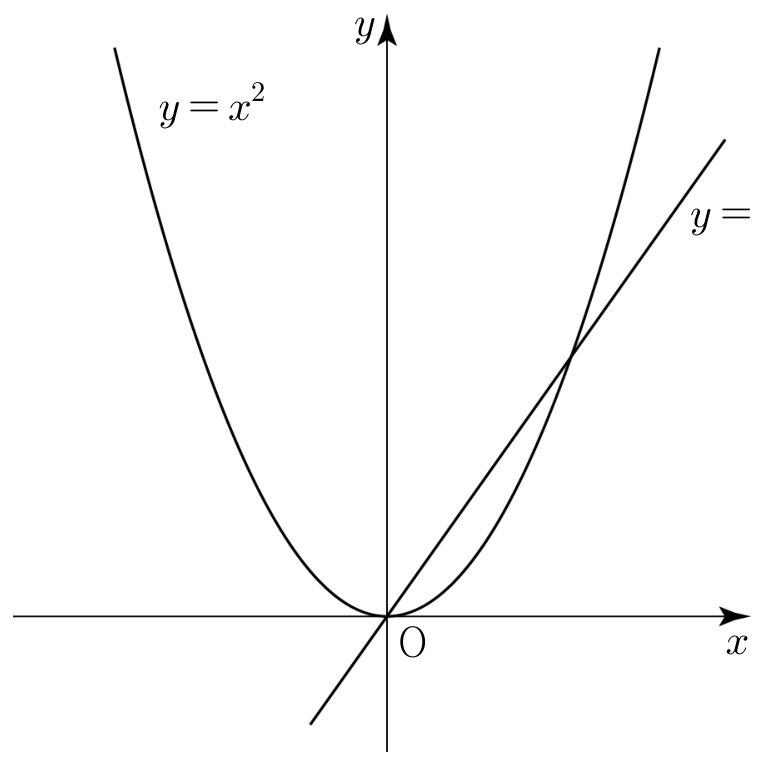
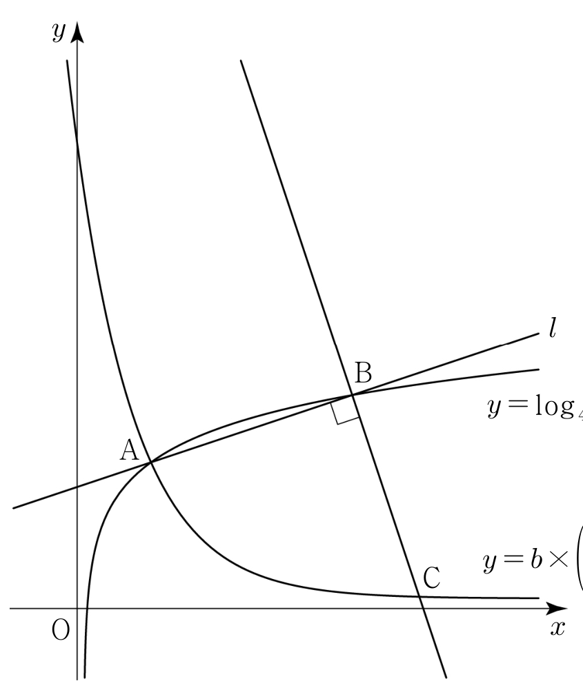
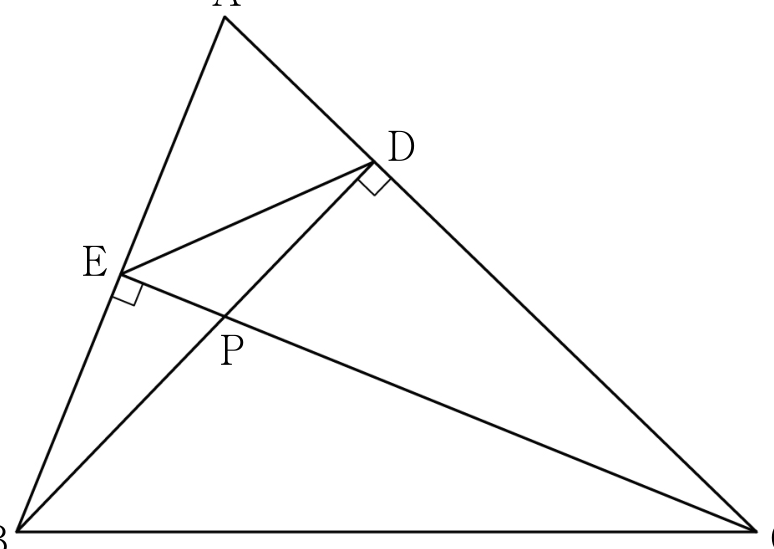

원본 (내부용)함수 \(y=3^x\)의 그래프를 \(x\)축의 방향으로 \(m\)만큼, \(y\)축의 방향으로 \(n\)만큼 평행이동한 그래프는 점 \((7,5)\)를 지나고, 점근선의 방정식이 \(y=2\)이다. \(m+n\)의 값은? (단, \(m,\ n\)은 상수이다.) [3점]
① \(6\)② \(8\)③ \(10\)④ \(12\)⑤ \(14\)
원본 정답 ②
원본 풀이 (내부용)[출제의도] 지수함수의 그래프 이해하기
함수 \(y=3^x\)의 그래프를 \(x\)축의 방향으로 \(m\)만큼, \(y\)축의 방향으로 \(n\)만큼 평행이동하면 함수 \(y=3^{x-m}+n\)의 그래프와 일치하고 점근선의 방정식이 \(y=2\)이므로 \(n=2\)
점 \((7,5)\)를 지나므로 \(5=3^{7-m}+2\)
\(
3^{7-m}=3,\quad m=6
\)
따라서 \(m+n=6+2=8\)
생성기 숫자판 1/6 · G2M1-04#13함수 $y=2^{x}$의 그래프를 $x$축의 방향으로 $m$만큼, $y$축의 방향으로 $n$만큼 평행이동한 그래프가 점 $\left(4,\ 4\right)$를 지나고 점근선이 직선 $y=2$일 때, $m+n$의 값으로 옳은 것을 고르세요.
① $1$② $2$③ $3$④ $4$⑤ $5$
정답⑤ $5$ 평행이동한 그래프의 식은 $y=2^{x-m}+n$이고, 점근선이 직선 $y=2$이므로 $n=2$ 점 $\left(4,\ 4\right)$를 지나므로 $4=2^{4-m}+2$, $2^{4-m}=2$ $4-m=1$이므로 $m=3$ 따라서 $m+n=5$
숫자: 원본 3 7 5 2 → 쌍둥이 2 4 4 2 · 같은 수: 2
생성기 숫자판 2/6 · G2M1-04#13함수 $y=2^{x}$의 그래프를 $x$축의 방향으로 $m$만큼, $y$축의 방향으로 $n$만큼 평행이동한 그래프가 점 $\left(9,\ 7\right)$을 지나고 점근선이 직선 $y=3$일 때, $m+n$의 값으로 옳은 것을 고르세요.
① $9$② $10$③ $11$④ $12$⑤ $13$
정답② $10$ 평행이동한 그래프의 식은 $y=2^{x-m}+n$이고, 점근선이 직선 $y=3$이므로 $n=3$ 점 $\left(9,\ 7\right)$을 지나므로 $7=2^{9-m}+3$, $2^{9-m}=4$ $9-m=2$이므로 $m=7$ 따라서 $m+n=10$
숫자: 원본 3 7 5 2 → 쌍둥이 2 9 7 3 · 같은 수: 2 3 7
생성기 숫자판 3/6 · G2M1-04#13함수 $y=2^{x}$의 그래프를 $x$축의 방향으로 $m$만큼, $y$축의 방향으로 $n$만큼 평행이동한 그래프가 점 $\left(5,\ 3\right)$을 지나고 점근선이 직선 $y=1$일 때, $m+n$의 값으로 옳은 것을 고르세요.
① $1$② $2$③ $3$④ $4$⑤ $5$
정답⑤ $5$ 평행이동한 그래프의 식은 $y=2^{x-m}+n$이고, 점근선이 직선 $y=1$이므로 $n=1$ 점 $\left(5,\ 3\right)$을 지나므로 $3=2^{5-m}+1$, $2^{5-m}=2$ $5-m=1$이므로 $m=4$ 따라서 $m+n=5$
숫자: 원본 3 7 5 2 → 쌍둥이 2 5 3 1 · 같은 수: 2 3 5
생성기 숫자판 4/6 · G2M1-04#13함수 $y=2^{x}$의 그래프를 $x$축의 방향으로 $m$만큼, $y$축의 방향으로 $n$만큼 평행이동한 그래프가 점 $\left(7,\ 7\right)$을 지나고 점근선이 직선 $y=3$일 때, $m+n$의 값으로 옳은 것을 고르세요.
① $6$② $7$③ $8$④ $9$⑤ $10$
정답③ $8$ 평행이동한 그래프의 식은 $y=2^{x-m}+n$이고, 점근선이 직선 $y=3$이므로 $n=3$ 점 $\left(7,\ 7\right)$을 지나므로 $7=2^{7-m}+3$, $2^{7-m}=4$ $7-m=2$이므로 $m=5$ 따라서 $m+n=8$
숫자: 원본 3 7 5 2 → 쌍둥이 2 7 7 3 · 같은 수: 2 3 7
생성기 숫자판 5/6 · G2M1-04#13함수 $y=2^{x}$의 그래프를 $x$축의 방향으로 $m$만큼, $y$축의 방향으로 $n$만큼 평행이동한 그래프가 점 $\left(2,\ 0\right)$을 지나고 점근선이 직선 $y=-2$일 때, $m+n$의 값으로 옳은 것을 고르세요.
① $-4$② $-3$③ $-2$④ $-1$⑤ $0$
정답④ $-1$ 평행이동한 그래프의 식은 $y=2^{x-m}+n$이고, 점근선이 직선 $y=-2$이므로 $n=-2$ 점 $\left(2,\ 0\right)$을 지나므로 $0=2^{2-m}-2$, $2^{2-m}=2$ $2-m=1$이므로 $m=1$ 따라서 $m+n=-1$
숫자: 원본 3 7 5 2 → 쌍둥이 2 2 0 2 · 같은 수: 2
생성기 숫자판 6/6 · G2M1-04#13함수 $y=2^{x}$의 그래프를 $x$축의 방향으로 $m$만큼, $y$축의 방향으로 $n$만큼 평행이동한 그래프가 점 $\left(10,\ 10\right)$을 지나고 점근선이 직선 $y=2$일 때, $m+n$의 값으로 옳은 것을 고르세요.
① $7$② $8$③ $9$④ $10$⑤ $11$
정답③ $9$ 평행이동한 그래프의 식은 $y=2^{x-m}+n$이고, 점근선이 직선 $y=2$이므로 $n=2$ 점 $\left(10,\ 10\right)$을 지나므로 $10=2^{10-m}+2$, $2^{10-m}=8$ $10-m=3$이므로 $m=7$ 따라서 $m+n=9$
숫자: 원본 3 7 5 2 → 쌍둥이 2 10 10 2 · 같은 수: 2
9. 2021년 9월 9번 · 3점 · 수학Ⅰ 삼각함수 · G2M8-05#1
원본 (내부용)\(\overline{AB}=\overline{AC}=2\)인 삼각형 \(ABC\)에서 \(\angle BAC=\theta\ (0<\theta<\pi)\)라 하자. 삼각형 \(ABC\)의 넓이가 \(1\)보다 크도록 하는 모든 \(\theta\)의 값의 범위가 \(\alpha<\theta<\beta\)일 때, \(2\alpha+\beta\)의 값은? [3점]
① \(\frac76\pi\)② \(\frac43\pi\)③ \(\frac32\pi\)④ \(\frac53\pi\)⑤ \(\frac{11}{6}\pi\)
원본 정답 ①
원본 풀이 (내부용)[출제의도] 삼각함수의 그래프 이해하기
삼각형 \(ABC\)의 넓이는
\(
\frac12\times2\times2\times\sin\theta=2\sin\theta
\)
삼각형 \(ABC\)의 넓이가 1보다 크므로 \(\sin\theta>\frac12\)
곡선 \(y=\sin\theta\ (0<\theta<\pi)\)와 직선 \(y=\frac12\)의 개형은 다음과 같다.
\(
0<\theta<\pi\text{에서 }\sin\theta>\frac12\text{가 되는 }
\frac{\pi}{6}<\theta<\frac{5\pi}{6}
\)
\(
\alpha=\frac{\pi}{6},\quad \beta=\frac{5\pi}{6}
\)
따라서
\(
2\alpha+\beta
=2\times\frac{\pi}{6}+\frac{5\pi}{6}
=\frac76\pi
\)
생성기 숫자판 1/6 · G2M8-05#1$\overline{\mathrm{AB}}=\overline{\mathrm{AC}}=16$인 삼각형 $\mathrm{ABC}$에서 $\angle\mathrm{BAC}=\theta\ \left(0<\theta<\pi\right)$라 합시다. 삼각형 $\mathrm{ABC}$의 넓이가 $64\sqrt{3}$보다 크도록 하는 모든 $\theta$의 값의 범위가 $\alpha<\theta<\beta$일 때, $3\alpha+\beta$의 값으로 옳은 것을 고르세요.
① $\pi$② $\frac{4}{3}\pi$③ $\frac{5}{3}\pi$④ $2\pi$⑤ $\frac{7}{3}\pi$
정답③ $\frac{5}{3}\pi$ 삼각형 $\mathrm{ABC}$의 넓이는 $\frac{1}{2}\times 16\times 16\times\sin\theta=128\sin\theta$ $128\sin\theta>64\sqrt{3}$이므로 $\sin\theta>\frac{\sqrt{3}}{2}$ $0<\theta<\pi$이고 $\frac{\pi}{3}<\theta<\frac{2}{3}\pi$이므로 $\alpha=\frac{\pi}{3}$, $\beta=\frac{2}{3}\pi$ $3\alpha+\beta=\pi+\frac{2}{3}\pi=\frac{5}{3}\pi$
숫자: 원본 2 0 1 2 → 쌍둥이 16 0 64 3 3 · 같은 수: 0
생성기 숫자판 2/6 · G2M8-05#1$\overline{\mathrm{AB}}=\overline{\mathrm{AC}}=30$인 삼각형 $\mathrm{ABC}$에서 $\angle\mathrm{BAC}=\theta\ \left(0<\theta<\pi\right)$라 합시다. 삼각형 $\mathrm{ABC}$의 넓이가 $225\sqrt{3}$보다 크도록 하는 모든 $\theta$의 값의 범위가 $\alpha<\theta<\beta$일 때, $3\alpha+\beta$의 값으로 옳은 것을 고르세요.
① $\frac{\pi}{3}$② $\frac{2}{3}\pi$③ $\pi$④ $\frac{4}{3}\pi$⑤ $\frac{5}{3}\pi$
정답⑤ $\frac{5}{3}\pi$ 삼각형 $\mathrm{ABC}$의 넓이는 $\frac{1}{2}\times 30\times 30\times\sin\theta=450\sin\theta$ $450\sin\theta>225\sqrt{3}$이므로 $\sin\theta>\frac{\sqrt{3}}{2}$ $0<\theta<\pi$이고 $\frac{\pi}{3}<\theta<\frac{2}{3}\pi$이므로 $\alpha=\frac{\pi}{3}$, $\beta=\frac{2}{3}\pi$ $3\alpha+\beta=\pi+\frac{2}{3}\pi=\frac{5}{3}\pi$
숫자: 원본 2 0 1 2 → 쌍둥이 30 0 225 3 3 · 같은 수: 0
생성기 숫자판 3/6 · G2M8-05#1$\overline{\mathrm{AB}}=\overline{\mathrm{AC}}=12$인 삼각형 $\mathrm{ABC}$에서 $\angle\mathrm{BAC}=\theta\ \left(0<\theta<\pi\right)$라 합시다. 삼각형 $\mathrm{ABC}$의 넓이가 $36\sqrt{3}$보다 크도록 하는 모든 $\theta$의 값의 범위가 $\alpha<\theta<\beta$일 때, $3\alpha+\beta$의 값으로 옳은 것을 고르세요.
① $\pi$② $\frac{4}{3}\pi$③ $\frac{5}{3}\pi$④ $2\pi$⑤ $\frac{7}{3}\pi$
정답③ $\frac{5}{3}\pi$ 삼각형 $\mathrm{ABC}$의 넓이는 $\frac{1}{2}\times 12\times 12\times\sin\theta=72\sin\theta$ $72\sin\theta>36\sqrt{3}$이므로 $\sin\theta>\frac{\sqrt{3}}{2}$ $0<\theta<\pi$이고 $\frac{\pi}{3}<\theta<\frac{2}{3}\pi$이므로 $\alpha=\frac{\pi}{3}$, $\beta=\frac{2}{3}\pi$ $3\alpha+\beta=\pi+\frac{2}{3}\pi=\frac{5}{3}\pi$
숫자: 원본 2 0 1 2 → 쌍둥이 12 0 36 3 3 · 같은 수: 0
생성기 숫자판 4/6 · G2M8-05#1$\overline{\mathrm{AB}}=\overline{\mathrm{AC}}=42$인 삼각형 $\mathrm{ABC}$에서 $\angle\mathrm{BAC}=\theta\ \left(0<\theta<\pi\right)$라 합시다. 삼각형 $\mathrm{ABC}$의 넓이가 $441\sqrt{3}$보다 크도록 하는 모든 $\theta$의 값의 범위가 $\alpha<\theta<\beta$일 때, $3\alpha+\beta$의 값으로 옳은 것을 고르세요.
① $\frac{5}{3}\pi$② $2\pi$③ $\frac{7}{3}\pi$④ $\frac{8}{3}\pi$⑤ $3\pi$
정답① $\frac{5}{3}\pi$ 삼각형 $\mathrm{ABC}$의 넓이는 $\frac{1}{2}\times 42\times 42\times\sin\theta=882\sin\theta$ $882\sin\theta>441\sqrt{3}$이므로 $\sin\theta>\frac{\sqrt{3}}{2}$ $0<\theta<\pi$이고 $\frac{\pi}{3}<\theta<\frac{2}{3}\pi$이므로 $\alpha=\frac{\pi}{3}$, $\beta=\frac{2}{3}\pi$ $3\alpha+\beta=\pi+\frac{2}{3}\pi=\frac{5}{3}\pi$
숫자: 원본 2 0 1 2 → 쌍둥이 42 0 441 3 3 · 같은 수: 0
생성기 숫자판 5/6 · G2M8-05#1$\overline{\mathrm{AB}}=\overline{\mathrm{AC}}=50$인 삼각형 $\mathrm{ABC}$에서 $\angle\mathrm{BAC}=\theta\ \left(0<\theta<\pi\right)$라 합시다. 삼각형 $\mathrm{ABC}$의 넓이가 $625$보다 크도록 하는 모든 $\theta$의 값의 범위가 $\alpha<\theta<\beta$일 때, $3\alpha+\beta$의 값으로 옳은 것을 고르세요.
① $\frac{\pi}{3}$② $\frac{2}{3}\pi$③ $\pi$④ $\frac{4}{3}\pi$⑤ $\frac{5}{3}\pi$
정답④ $\frac{4}{3}\pi$ 삼각형 $\mathrm{ABC}$의 넓이는 $\frac{1}{2}\times 50\times 50\times\sin\theta=1250\sin\theta$ $1250\sin\theta>625$이므로 $\sin\theta>\frac{1}{2}$ $0<\theta<\pi$이고 $\frac{\pi}{6}<\theta<\frac{5}{6}\pi$이므로 $\alpha=\frac{\pi}{6}$, $\beta=\frac{5}{6}\pi$ $3\alpha+\beta=\frac{\pi}{2}+\frac{5}{6}\pi=\frac{4}{3}\pi$
숫자: 원본 2 0 1 2 → 쌍둥이 50 0 625 3 · 같은 수: 0
생성기 숫자판 6/6 · G2M8-05#1$\overline{\mathrm{AB}}=\overline{\mathrm{AC}}=14$인 삼각형 $\mathrm{ABC}$에서 $\angle\mathrm{BAC}=\theta\ \left(0<\theta<\pi\right)$라 합시다. 삼각형 $\mathrm{ABC}$의 넓이가 $49\sqrt{3}$보다 크도록 하는 모든 $\theta$의 값의 범위가 $\alpha<\theta<\beta$일 때, $3\alpha+\beta$의 값으로 옳은 것을 고르세요.
① $\pi$② $\frac{4}{3}\pi$③ $\frac{5}{3}\pi$④ $2\pi$⑤ $\frac{7}{3}\pi$
정답③ $\frac{5}{3}\pi$ 삼각형 $\mathrm{ABC}$의 넓이는 $\frac{1}{2}\times 14\times 14\times\sin\theta=98\sin\theta$ $98\sin\theta>49\sqrt{3}$이므로 $\sin\theta>\frac{\sqrt{3}}{2}$ $0<\theta<\pi$이고 $\frac{\pi}{3}<\theta<\frac{2}{3}\pi$이므로 $\alpha=\frac{\pi}{3}$, $\beta=\frac{2}{3}\pi$ $3\alpha+\beta=\pi+\frac{2}{3}\pi=\frac{5}{3}\pi$
숫자: 원본 2 0 1 2 → 쌍둥이 14 0 49 3 3 · 같은 수: 0
10. 2021년 9월 10번 · 3점 · 수학Ⅰ 수열 · G2M10-02#5
원본 (내부용)자연수 \(n\)에 대하여 곡선 \(y=x^2\)과 직선 \(y=\sqrt n\,x\)가 만나는 서로 다른 두 점 사이의 거리를 \(f(n)\)이라 하자. \( \sum_{n=1}^{10}\frac{1}{\{f(n)\}^2} \) 의 값은? [3점]

① \(\frac9{11}\)② \(\frac{19}{22}\)③ \(\frac{10}{11}\)④ \(\frac{21}{22}\)⑤ \(1\)
그림·참고 ---
원본 정답 ③
원본 풀이 (내부용)[출제의도] 여러 가지 수열의 합 이해하기
\(
x^2=\sqrt n x,\quad x(x-\sqrt n)=0
\)
\(
x=0\text{ 또는 }x=\sqrt n
\)
곡선 \(y=x^2\)과 직선 \(y=\sqrt n x\)가 만나는 서로 다른 두 점의 좌표는 \((0,0),(\sqrt n,n)\)
\(
\{f(n)\}^2=(\sqrt n-0)^2+(n-0)^2
=n+n^2=n(n+1)
\)
\(
\begin{aligned}
\sum_{n=1}^{10}\frac1{\{f(n)\}^2}
&=\sum_{n=1}^{10}\frac1{n(n+1)}
=\sum_{n=1}^{10}\left(\frac1n-\frac1{n+1}\right)\\
&=\left(1-\frac12\right)+\left(\frac12-\frac13\right)+\cdots+
\left(\frac1{10}-\frac1{11}\right)\\
&=1-\frac1{11}=\frac{10}{11}
\end{aligned}
\)
생성기 숫자판 1/5 · G2M10-02#5자연수 $n$에 대하여 곡선 $y=2x^{2}$과 직선 $y=\sqrt{n}\,x$가 만나는 서로 다른 두 점 사이의 거리를 $f\left(n\right)$이라 합시다. $\sum_{n=1}^{15}\frac{1}{\left\{f\left(n\right)\right\}^{2}}$의 값으로 옳은 것을 고르세요.
① $\frac{29}{8}$② $\frac{15}{4}$③ $\frac{31}{8}$④ $4$⑤ $\frac{33}{8}$
정답② $\frac{15}{4}$ $2x^{2}=\sqrt{n}\,x$에서 $x=0$ 또는 $x=\frac{\sqrt{n}}{2}$이므로 두 점은 $\left(0,\ 0\right)$, $\left(\frac{\sqrt{n}}{2},\ \frac{n}{2}\right)$ $\left\{f\left(n\right)\right\}^{2}=\frac{n}{4}+\frac{n^{2}}{4}=\frac{n\left(n+1\right)}{4}$ $\sum_{n=1}^{15}\frac{1}{\left\{f\left(n\right)\right\}^{2}}=4\sum_{n=1}^{15}\left(\frac{1}{n}-\frac{1}{n+1}\right)=4\left(1-\frac{1}{16}\right)=\frac{15}{4}$
숫자: 원본 1 1 → 쌍둥이 2 1 1 · 같은 수: 1
생성기 숫자판 2/5 · G2M10-02#5자연수 $n$에 대하여 곡선 $y=2x^{2}$과 직선 $y=\sqrt{n}\,x$가 만나는 서로 다른 두 점 사이의 거리를 $f\left(n\right)$이라 합시다. $\sum_{n=1}^{13}\frac{1}{\left\{f\left(n\right)\right\}^{2}}$의 값으로 옳은 것을 고르세요.
① $\frac{26}{7}$② $\frac{27}{7}$③ $4$④ $\frac{29}{7}$⑤ $\frac{30}{7}$
정답① $\frac{26}{7}$ $2x^{2}=\sqrt{n}\,x$에서 $x=0$ 또는 $x=\frac{\sqrt{n}}{2}$이므로 두 점은 $\left(0,\ 0\right)$, $\left(\frac{\sqrt{n}}{2},\ \frac{n}{2}\right)$ $\left\{f\left(n\right)\right\}^{2}=\frac{n}{4}+\frac{n^{2}}{4}=\frac{n\left(n+1\right)}{4}$ $\sum_{n=1}^{13}\frac{1}{\left\{f\left(n\right)\right\}^{2}}=4\sum_{n=1}^{13}\left(\frac{1}{n}-\frac{1}{n+1}\right)=4\left(1-\frac{1}{14}\right)=\frac{26}{7}$
숫자: 원본 1 1 → 쌍둥이 2 1 1 · 같은 수: 1
생성기 숫자판 3/5 · G2M10-02#5자연수 $n$에 대하여 곡선 $y=x^{2}$과 직선 $y=\sqrt{n}\,x$가 만나는 서로 다른 두 점 사이의 거리를 $f\left(n\right)$이라 합시다. $\sum_{n=1}^{8}\frac{1}{\left\{f\left(n\right)\right\}^{2}}$의 값으로 옳은 것을 고르세요.
① $\frac{8}{9}$② $\frac{17}{18}$③ $1$④ $\frac{19}{18}$⑤ $\frac{10}{9}$
정답① $\frac{8}{9}$ $x^{2}=\sqrt{n}\,x$에서 $x=0$ 또는 $x=\sqrt{n}$이므로 두 점은 $\left(0,\ 0\right)$, $\left(\sqrt{n},\ n\right)$ $\left\{f\left(n\right)\right\}^{2}=n+n^{2}=n\left(n+1\right)$ $\sum_{n=1}^{8}\frac{1}{\left\{f\left(n\right)\right\}^{2}}=\sum_{n=1}^{8}\left(\frac{1}{n}-\frac{1}{n+1}\right)=\left(1-\frac{1}{9}\right)=\frac{8}{9}$
숫자: 원본 1 1 → 쌍둥이 1 1 · 같은 수: 1
생성기 숫자판 4/5 · G2M10-02#5자연수 $n$에 대하여 곡선 $y=x^{2}$과 직선 $y=\sqrt{n}\,x$가 만나는 서로 다른 두 점 사이의 거리를 $f\left(n\right)$이라 합시다. $\sum_{n=1}^{6}\frac{1}{\left\{f\left(n\right)\right\}^{2}}$의 값으로 옳은 것을 고르세요.
① $\frac{5}{7}$② $\frac{11}{14}$③ $\frac{6}{7}$④ $\frac{13}{14}$⑤ $1$
정답③ $\frac{6}{7}$ $x^{2}=\sqrt{n}\,x$에서 $x=0$ 또는 $x=\sqrt{n}$이므로 두 점은 $\left(0,\ 0\right)$, $\left(\sqrt{n},\ n\right)$ $\left\{f\left(n\right)\right\}^{2}=n+n^{2}=n\left(n+1\right)$ $\sum_{n=1}^{6}\frac{1}{\left\{f\left(n\right)\right\}^{2}}=\sum_{n=1}^{6}\left(\frac{1}{n}-\frac{1}{n+1}\right)=\left(1-\frac{1}{7}\right)=\frac{6}{7}$
숫자: 원본 1 1 → 쌍둥이 1 1 · 같은 수: 1
생성기 숫자판 5/5 · G2M10-02#5자연수 $n$에 대하여 곡선 $y=x^{2}$과 직선 $y=\sqrt{n}\,x$가 만나는 서로 다른 두 점 사이의 거리를 $f\left(n\right)$이라 합시다. $\sum_{n=1}^{5}\frac{1}{\left\{f\left(n\right)\right\}^{2}}$의 값으로 옳은 것을 고르세요.
① $\frac{1}{2}$② $\frac{7}{12}$③ $\frac{2}{3}$④ $\frac{3}{4}$⑤ $\frac{5}{6}$
정답⑤ $\frac{5}{6}$ $x^{2}=\sqrt{n}\,x$에서 $x=0$ 또는 $x=\sqrt{n}$이므로 두 점은 $\left(0,\ 0\right)$, $\left(\sqrt{n},\ n\right)$ $\left\{f\left(n\right)\right\}^{2}=n+n^{2}=n\left(n+1\right)$ $\sum_{n=1}^{5}\frac{1}{\left\{f\left(n\right)\right\}^{2}}=\sum_{n=1}^{5}\left(\frac{1}{n}-\frac{1}{n+1}\right)=\left(1-\frac{1}{6}\right)=\frac{5}{6}$
숫자: 원본 1 1 → 쌍둥이 1 1 · 같은 수: 1
11. 2021년 9월 11번 · 3점 · 수학Ⅰ 지수·로그 · G2M10-03#1
원본 (내부용)양수 \(p\)에 대하여 두 함수 \( f(x)=\log_2(x-p),\qquad g(x)=2^x+1 \) 이 있다. 곡선 \(y=f(x)\)의 점근선이 곡선 \(y=g(x)\), \(x\)축과 만나는 점을 각각 \(A,\ B\)라 하고, 곡선 \(y=g(x)\)의 점근선이 곡선 \(y=f(x)\)와 만나는 점을 \(C\)라 하자. 삼각형 \(ABC\)의 넓이가 \(6\)일 때, \(p\)의 값은? [3점]
① \(2\)② \(\log_2 5\)③ \(\log_2 6\)④ \(\log_2 7\)⑤ \(3\)
원본 정답 ②
원본 풀이 (내부용)[출제의도] 지수함수와 로그함수를 활용하여 문제 해결하기
두 곡선 \(y=f(x),\ y=g(x)\)의 점근선의 방정식은 각각 \(x=p,\ y=1\)이므로
\(
A(p,2^p+1),\quad B(p,0),\quad C(p+2,1)
\)
(삼각형 \(ABC\)의 넓이)
\(
=\frac12\times(2^p+1)\times2=2^p+1
\)
삼각형 \(ABC\)의 넓이가 6이므로
\(
2^p+1=6,\quad 2^p=5
\)
따라서 \(p=\log_2 5\)
생성기 숫자판 1/5 · G2M10-03#1양수 $p$에 대하여 두 함수 $f\left(x\right)=\log_{2}\left(x-p\right)$, $g\left(x\right)=2^{x}+1$이 있습니다. 곡선 $y=f\left(x\right)$의 점근선이 곡선 $y=g\left(x\right)$, $x$축과 만나는 점을 각각 $\mathrm{A}$, $\mathrm{B}$라 하고, 곡선 $y=g\left(x\right)$의 점근선이 곡선 $y=f\left(x\right)$와 만나는 점을 $\mathrm{C}$라 합시다. 삼각형 $\mathrm{ABC}$의 넓이가 $7$일 때, $p$의 값으로 옳은 것을 고르세요.
① $8$② $\log_{2}12$③ $\log_{2}14$④ $\log_{2}13$⑤ $7$
정답④ $\log_{2}13$ 점근선은 각각 $x=p$, $y=0$이다. 따라서 $A=(p,2^{p}+1)$, $B=(p,0)$, $C=(p+1,0)$이다. 삼각형의 넓이는 $\frac{1}{2}(2^{p}+1)=7$이므로 $2^{p}=13$. 따라서 $p=\log_{2}13$이다.
숫자: 원본 2 2 1 6 → 쌍둥이 2 2 1 7 · 같은 수: 1 2
생성기 숫자판 2/5 · G2M10-03#1양수 $p$에 대하여 두 함수 $f\left(x\right)=\log_{2}\left(x-p\right)$, $g\left(x\right)=2^{x}+1$이 있습니다. 곡선 $y=f\left(x\right)$의 점근선이 곡선 $y=g\left(x\right)$, $x$축과 만나는 점을 각각 $\mathrm{A}$, $\mathrm{B}$라 하고, 곡선 $y=g\left(x\right)$의 점근선이 곡선 $y=f\left(x\right)$와 만나는 점을 $\mathrm{C}$라 합시다. 삼각형 $\mathrm{ABC}$의 넓이가 $5$일 때, $p$의 값으로 옳은 것을 고르세요.
① $\log_{2}9$② $6$③ $5$④ $\log_{2}8$⑤ $\log_{2}10$
정답① $\log_{2}9$ 점근선은 각각 $x=p$, $y=0$이다. 따라서 $A=(p,2^{p}+1)$, $B=(p,0)$, $C=(p+1,0)$이다. 삼각형의 넓이는 $\frac{1}{2}(2^{p}+1)=5$이므로 $2^{p}=9$. 따라서 $p=\log_{2}9$이다.
숫자: 원본 2 2 1 6 → 쌍둥이 2 2 1 5 · 같은 수: 1 2
생성기 숫자판 3/5 · G2M10-03#1양수 $p$에 대하여 두 함수 $f\left(x\right)=\log_{2}\left(x-p\right)$, $g\left(x\right)=2^{x}+1$이 있습니다. 곡선 $y=f\left(x\right)$의 점근선이 곡선 $y=g\left(x\right)$, $x$축과 만나는 점을 각각 $\mathrm{A}$, $\mathrm{B}$라 하고, 곡선 $y=g\left(x\right)$의 점근선이 곡선 $y=f\left(x\right)$와 만나는 점을 $\mathrm{C}$라 합시다. 삼각형 $\mathrm{ABC}$의 넓이가 $4$일 때, $p$의 값으로 옳은 것을 고르세요.
① $4$② $\log_{2}7$③ $5$④ $\log_{2}6$⑤ $\log_{2}8$
정답② $\log_{2}7$ 점근선은 각각 $x=p$, $y=0$이다. 따라서 $A=(p,2^{p}+1)$, $B=(p,0)$, $C=(p+1,0)$이다. 삼각형의 넓이는 $\frac{1}{2}(2^{p}+1)=4$이므로 $2^{p}=7$. 따라서 $p=\log_{2}7$이다.
숫자: 원본 2 2 1 6 → 쌍둥이 2 2 1 4 · 같은 수: 1 2
생성기 숫자판 4/5 · G2M10-03#1양수 $p$에 대하여 두 함수 $f\left(x\right)=\log_{2}\left(x-p\right)$, $g\left(x\right)=2^{x}+1$이 있습니다. 곡선 $y=f\left(x\right)$의 점근선이 곡선 $y=g\left(x\right)$, $x$축과 만나는 점을 각각 $\mathrm{A}$, $\mathrm{B}$라 하고, 곡선 $y=g\left(x\right)$의 점근선이 곡선 $y=f\left(x\right)$와 만나는 점을 $\mathrm{C}$라 합시다. 삼각형 $\mathrm{ABC}$의 넓이가 $3$일 때, $p$의 값으로 옳은 것을 고르세요.
① $3$② $\log_{2}6$③ $\log_{2}4$④ $4$⑤ $\log_{2}5$
정답⑤ $\log_{2}5$ 점근선은 각각 $x=p$, $y=0$이다. 따라서 $A=(p,2^{p}+1)$, $B=(p,0)$, $C=(p+1,0)$이다. 삼각형의 넓이는 $\frac{1}{2}(2^{p}+1)=3$이므로 $2^{p}=5$. 따라서 $p=\log_{2}5$이다.
숫자: 원본 2 2 1 6 → 쌍둥이 2 2 1 3 · 같은 수: 1 2
생성기 숫자판 5/5 · G2M10-03#1양수 $p$에 대하여 두 함수 $f\left(x\right)=\log_{2}\left(x-p\right)$, $g\left(x\right)=2^{x}+1$이 있습니다. 곡선 $y=f\left(x\right)$의 점근선이 곡선 $y=g\left(x\right)$, $x$축과 만나는 점을 각각 $\mathrm{A}$, $\mathrm{B}$라 하고, 곡선 $y=g\left(x\right)$의 점근선이 곡선 $y=f\left(x\right)$와 만나는 점을 $\mathrm{C}$라 합시다. 삼각형 $\mathrm{ABC}$의 넓이가 $6$일 때, $p$의 값으로 옳은 것을 고르세요.
① $\log_{2}12$② $\log_{2}10$③ $7$④ $6$⑤ $\log_{2}11$
정답⑤ $\log_{2}11$ 점근선은 각각 $x=p$, $y=0$이다. 따라서 $A=(p,2^{p}+1)$, $B=(p,0)$, $C=(p+1,0)$이다. 삼각형의 넓이는 $\frac{1}{2}(2^{p}+1)=6$이므로 $2^{p}=11$. 따라서 $p=\log_{2}11$이다.
숫자: 원본 2 2 1 6 → 쌍둥이 2 2 1 6 · 같은 수: 1 2 6
12. 2021년 9월 12번 · 3점 · 수학Ⅰ 수열 · G2M8-09#1
원본 (내부용)수열 \(\{a_n\}\)이 모든 자연수 \(n\)에 대하여 \( a_{n+1}= \begin{cases} \log_2 a_n & (n\text{이 홀수인 경우})\\ 2^{a_n+1} & (n\text{이 짝수인 경우}) \end{cases} \) 를 만족시킨다. \(a_8=5\)일 때, \(a_6+a_7\)의 값은? [3점]
① \(36\)② \(38\)③ \(40\)④ \(42\)⑤ \(44\)
그림·참고 ---
원본 정답 ①
원본 풀이 (내부용)[출제의도] 수열 이해하기
\(
a_3=\log_2 a_7=5,\quad a_7=2^5=32
\)
\(
a_7=2^{a_6+1}=2^5,\quad a_6=4
\)
따라서 \(a_6+a_7=4+32=36\)
생성기 숫자판 1/6 · G2M8-09#1수열 $\{a_n\}$이 모든 자연수 $n$에 대하여 $a_{n+1}=\begin{cases}\log_{2}a_n & (n\text{이 홀수인 경우})\\2^{a_{n}} & (n\text{이 짝수인 경우})\end{cases}$를 만족시킨다. $a_{10}=5$일 때, $a_{8}+a_{9}$의 값은?
원본 (내부용)반지름의 길이가 \(2\)이고 중심각의 크기가 \(\theta\)인 부채꼴이 있다. \(\theta\)가 다음 조건을 만족시킬 때, 이 부채꼴의 넓이는? [3점] (가) \(0<\theta<\frac{\pi}{2}\) (나) 각의 크기 \(\theta\)를 나타내는 동경과 각의 크기 \(8\theta\)를 나타내는 동경이 일치한다.
① \(\frac37\pi\)② \(\frac{\pi}{2}\)③ \(\frac47\pi\)④ \(\frac9{14}\pi\)⑤ \(\frac57\pi\)
원본 정답 ③
원본 풀이 (내부용)[출제의도] 일반각과 호도법 이해하기
\(
8\theta-\theta=2n\pi\ (n\text{은 정수}),\quad
\theta=\frac{2n}{7}\pi
\)
\(
0<\theta<\frac{\pi}{2}\text{이므로 }
0<\frac{2n}{7}\pi<\frac{\pi}{2},\quad 0<n<\frac74
\)
\(n\)은 정수이므로 \(n=1,\ \theta=\frac27\pi\)
따라서 부채꼴의 넓이는
\(
\frac12\times2^2\times\frac27\pi=\frac47\pi
\)
---
### 16번 해설 계속
따라서 \(n=m+1\)일 때도 (★)이 성립한다.
(i), (ii)에 의하여 모든 자연수 \(n\)에 대하여
\(
a_1+2a_2+3a_3+\cdots+na_n
=\frac{n(n+1)}4(2a_n-1)
\)
이 성립한다.
\(
p=\frac12,\quad f(m)=\frac m2,\quad g(m)=\frac1{m+2}
\)
따라서
\(
p+\frac{f(5)}{g(3)}=13
\)
생성기 숫자판 1/6 · G2M8-05#2반지름의 길이가 $10$이고 중심각의 크기가 $\theta$인 부채꼴이 있습니다. $\theta$가 다음 조건을 만족시킬 때, 이 부채꼴의 넓이로 옳은 것을 고르세요.
(가) $0<\theta<\frac{\pi}{3}$
(나) 각의 크기 $\theta$를 나타내는 동경과 각의 크기 $9\theta$를 나타내는 동경이 일치합니다.
① $\frac{197}{16}\pi$② $\frac{99}{8}\pi$③ $\frac{199}{16}\pi$④ $\frac{25}{2}\pi$⑤ $\frac{201}{16}\pi$
정답④ $\frac{25}{2}\pi$ 두 동경이 일치하므로 $9\theta-\theta=2n\pi$ ($n$은 정수), $\theta=\frac{2n\pi}{8}$ $0<\theta<\frac{\pi}{3}$이고 $0<\frac{2n}{8}<\frac{1}{3}$이므로 $n=1$, $\theta=\frac{\pi}{4}$ 부채꼴의 넓이는 $\frac{1}{2}\times 10^{2}\times \frac{\pi}{4}=\frac{25}{2}\pi$
숫자: 원본 2 0 2 8 → 쌍둥이 10 0 3 9 · 같은 수: 0
생성기 숫자판 2/6 · G2M8-05#2반지름의 길이가 $5$이고 중심각의 크기가 $\theta$인 부채꼴이 있습니다. $\theta$가 다음 조건을 만족시킬 때, 이 부채꼴의 넓이로 옳은 것을 고르세요.
(가) $0<\theta<\frac{\pi}{3}$
(나) 각의 크기 $\theta$를 나타내는 동경과 각의 크기 $13\theta$를 나타내는 동경이 일치합니다.
① $\frac{23}{12}\pi$② $\frac{47}{24}\pi$③ $2\pi$④ $\frac{49}{24}\pi$⑤ $\frac{25}{12}\pi$
정답⑤ $\frac{25}{12}\pi$ 두 동경이 일치하므로 $13\theta-\theta=2n\pi$ ($n$은 정수), $\theta=\frac{2n\pi}{12}$ $0<\theta<\frac{\pi}{3}$이고 $0<\frac{2n}{12}<\frac{1}{3}$이므로 $n=1$, $\theta=\frac{\pi}{6}$ 부채꼴의 넓이는 $\frac{1}{2}\times 5^{2}\times \frac{\pi}{6}=\frac{25}{12}\pi$
숫자: 원본 2 0 2 8 → 쌍둥이 5 0 3 13 · 같은 수: 0
생성기 숫자판 3/6 · G2M8-05#2반지름의 길이가 $3$이고 중심각의 크기가 $\theta$인 부채꼴이 있습니다. $\theta$가 다음 조건을 만족시킬 때, 이 부채꼴의 넓이로 옳은 것을 고르세요.
(가) $0<\theta<\frac{\pi}{3}$
(나) 각의 크기 $\theta$를 나타내는 동경과 각의 크기 $9\theta$를 나타내는 동경이 일치합니다.
① $\frac{17}{16}\pi$② $\frac{9}{8}\pi$③ $\frac{19}{16}\pi$④ $\frac{5}{4}\pi$⑤ $\frac{21}{16}\pi$
정답② $\frac{9}{8}\pi$ 두 동경이 일치하므로 $9\theta-\theta=2n\pi$ ($n$은 정수), $\theta=\frac{2n\pi}{8}$ $0<\theta<\frac{\pi}{3}$이고 $0<\frac{2n}{8}<\frac{1}{3}$이므로 $n=1$, $\theta=\frac{\pi}{4}$ 부채꼴의 넓이는 $\frac{1}{2}\times 3^{2}\times \frac{\pi}{4}=\frac{9}{8}\pi$
숫자: 원본 2 0 2 8 → 쌍둥이 3 0 3 9 · 같은 수: 0
생성기 숫자판 4/6 · G2M8-05#2반지름의 길이가 $3$이고 중심각의 크기가 $\theta$인 부채꼴이 있습니다. $\theta$가 다음 조건을 만족시킬 때, 이 부채꼴의 넓이로 옳은 것을 고르세요.
(가) $0<\theta<\frac{\pi}{3}$
(나) 각의 크기 $\theta$를 나타내는 동경과 각의 크기 $12\theta$를 나타내는 동경이 일치합니다.
① $\frac{8}{11}\pi$② $\frac{17}{22}\pi$③ $\frac{9}{11}\pi$④ $\frac{19}{22}\pi$⑤ $\frac{10}{11}\pi$
정답③ $\frac{9}{11}\pi$ 두 동경이 일치하므로 $12\theta-\theta=2n\pi$ ($n$은 정수), $\theta=\frac{2n\pi}{11}$ $0<\theta<\frac{\pi}{3}$이고 $0<\frac{2n}{11}<\frac{1}{3}$이므로 $n=1$, $\theta=\frac{2}{11}\pi$ 부채꼴의 넓이는 $\frac{1}{2}\times 3^{2}\times \frac{2}{11}\pi=\frac{9}{11}\pi$
숫자: 원본 2 0 2 8 → 쌍둥이 3 0 3 12 · 같은 수: 0
생성기 숫자판 5/6 · G2M8-05#2반지름의 길이가 $3$이고 중심각의 크기가 $\theta$인 부채꼴이 있습니다. $\theta$가 다음 조건을 만족시킬 때, 이 부채꼴의 넓이로 옳은 것을 고르세요.
(가) $0<\theta<\frac{\pi}{3}$
(나) 각의 크기 $\theta$를 나타내는 동경과 각의 크기 $10\theta$를 나타내는 동경이 일치합니다.
① $\frac{8}{9}\pi$② $\frac{17}{18}\pi$③ $\pi$④ $\frac{19}{18}\pi$⑤ $\frac{10}{9}\pi$
정답③ $\pi$ 두 동경이 일치하므로 $10\theta-\theta=2n\pi$ ($n$은 정수), $\theta=\frac{2n\pi}{9}$ $0<\theta<\frac{\pi}{3}$이고 $0<\frac{2n}{9}<\frac{1}{3}$이므로 $n=1$, $\theta=\frac{2}{9}\pi$ 부채꼴의 넓이는 $\frac{1}{2}\times 3^{2}\times \frac{2}{9}\pi=\pi$
숫자: 원본 2 0 2 8 → 쌍둥이 3 0 3 10 · 같은 수: 0
생성기 숫자판 6/6 · G2M8-05#2반지름의 길이가 $3$이고 중심각의 크기가 $\theta$인 부채꼴이 있습니다. $\theta$가 다음 조건을 만족시킬 때, 이 부채꼴의 넓이로 옳은 것을 고르세요.
(가) $0<\theta<\frac{\pi}{3}$
(나) 각의 크기 $\theta$를 나타내는 동경과 각의 크기 $8\theta$를 나타내는 동경이 일치합니다.
① $\pi$② $\frac{15}{14}\pi$③ $\frac{8}{7}\pi$④ $\frac{17}{14}\pi$⑤ $\frac{9}{7}\pi$
정답⑤ $\frac{9}{7}\pi$ 두 동경이 일치하므로 $8\theta-\theta=2n\pi$ ($n$은 정수), $\theta=\frac{2n\pi}{7}$ $0<\theta<\frac{\pi}{3}$이고 $0<\frac{2n}{7}<\frac{1}{3}$이므로 $n=1$, $\theta=\frac{2}{7}\pi$ 부채꼴의 넓이는 $\frac{1}{2}\times 3^{2}\times \frac{2}{7}\pi=\frac{9}{7}\pi$
숫자: 원본 2 0 2 8 → 쌍둥이 3 0 3 8 · 같은 수: 0 8
14. 2021년 9월 14번 · 4점 · 수학Ⅰ 지수·로그 · 4점 쌍둥이
원본 (내부용)\(0\le x\le5\)에서 함수 \( f(x)=\log_3(x^2-6x+k)\qquad(k>9) \) 의 최댓값과 최솟값의 합이 \(2+\log_3 4\)가 되도록 하는 상수 \(k\)의 값은? [4점]
① \(11\)② \(12\)③ \(13\)④ \(14\)⑤ \(15\)
그림·참고 ---
원본 정답 ②
원본 풀이 (내부용)[출제의도] 로그함수의 그래프를 이용하여 문제 해결하기
\(
0\le x\le5\text{에서}
\)
함수 \(f(x)=\log_3\{(x-3)^2+k-9\}\)는
\(x=0\)일 때, 최댓값 \(\log_3 k\),
\(x=3\)일 때, 최솟값 \(\log_3(k-9)\)를 갖는다.
\(
\log_3 k+\log_3(k-9)=2+\log_3 4
\)
\(
\log_3 k(k-9)=\log_3 36
\)
\(
k^2-9k-36=0,\quad (k-12)(k+3)=0
\)
\(k>9\)이므로 \(k=12\)
쌍둥이 1/5 · 4점 쌍둥이$0\le x\le 3$에서 함수 $f\left(x\right)=\log_{3}\left(x^{2}-4x+k\right)\ \left(k>4\right)$의 최댓값과 최솟값의 합이 $1+\log_{3}4$가 되도록 하는 상수 $k$의 값으로 옳은 것을 고르세요.
쌍둥이 2/5 · 4점 쌍둥이$0\le x\le 2$에서 함수 $f\left(x\right)=\log_{2}\left(x^{2}-2x+k\right)\ \left(k>1\right)$의 최댓값과 최솟값의 합이 $2+\log_{2}5$가 되도록 하는 상수 $k$의 값으로 옳은 것을 고르세요.
쌍둥이 3/5 · 4점 쌍둥이$0\le x\le 7$에서 함수 $f\left(x\right)=\log_{2}\left(x^{2}-8x+k\right)\ \left(k>16\right)$의 최댓값과 최솟값의 합이 $4+\log_{2}5$가 되도록 하는 상수 $k$의 값으로 옳은 것을 고르세요.
쌍둥이 4/5 · 4점 쌍둥이$0\le x\le10$에서 함수 $f(x)=\log_{2}(x^2-10x+k)\ (k>25)$의 최댓값과 최솟값의 합이 $\log_{2}150$일 때, 함수 $f(x)$의 최솟값을 구하세요.
① $\log_{2}2$② $\log_{2}3$③ $\log_{2}4$④ $\log_{2}5$⑤ $\log_{2}6$
정답④ $\log_{2}5$ $x^2-10x+k=(x-5)^2+k-25$이므로 구간 $[0,10]$에서 최솟값은 $k-25$, 최댓값은 양 끝에서 $k$입니다. 따라서 $\log_{2}k+\log_{2}(k-25)=\log_{2}150$이고 $k(k-25)=150$입니다. $k>25$이므로 $k=30$입니다. 함수의 최솟값은 $\log_{2}(30-25)=\log_{2}5$입니다.
쌍둥이 5/5 · 4점 쌍둥이$0\le x\le8$에서 함수 $g(x)=\log_{3}(x^{2}-8x+k)\ (k>16)$의 최댓값과 최솟값의 합이 $\log_{3}80$일 때, 함수 $g(x)$의 최솟값을 구하세요.
① $\log_{3}2$② $\log_{3}3$③ $\log_{3}4$④ $\log_{3}6$⑤ $\log_{3}9$
정답③ $\log_{3}4$ $x^{2}-8x+k=(x-4)^{2}+k-16$이므로 $[0,8]$에서 최솟값은 $k-16$, 최댓값은 양 끝에서 $k$입니다. 따라서 $\log_{3}k+\log_{3}(k-16)=\log_{3}80$이고 $k(k-16)=80$입니다. $k>16$이므로 $k=20$이며, 함수의 최솟값은 $\log_{3}(20-16)=\log_{3}4$입니다.
원본 (내부용)\(2\) 이상의 자연수 \(n\)에 대하여 \((2n-5)(2n-9)\)의 \(n\)제곱근 중 실수인 것의 개수를 \(f(n)\)이라 하자. \( \sum_{n=2}^{8}f(n) \) 의 값은? [4점]
① \(5\)② \(7\)③ \(9\)④ \(11\)⑤ \(13\)
원본 정답 ③
원본 풀이 (내부용)[출제의도] 거듭제곱근 이해하기
2 이상의 자연수 \(n\)에 대하여
\(
(2n-5)(2n-9)
\)
의 \(n\)제곱근 중에서 실수인 것을 \(x\)라 하면
(i) \(n\)이 홀수인 경우
\(
x=\sqrt[n]{(2n-5)(2n-9)}
\)
이므로 \(f(n)=1\)
(ii) \(n\)이 짝수인 경우
\(
(2n-5)(2n-9)<0
\)
이면 실수 \(x\)는 존재하지 않으므로
\(
\frac52<n<\frac92
\)
인 짝수 \(n\)에 대하여 \(f(n)=0\)
\(
(2n-5)(2n-9)>0
\)
이면
\(
x=\sqrt[n]{(2n-5)(2n-9)}
\quad\text{또는}\quad
x=-\sqrt[n]{(2n-5)(2n-9)}
\)
이므로 \(n<\frac52\) 또는 \(n>\frac92\)인 짝수 \(n\)에 대하여 \(f(n)=2\)
(i), (ii)에 의하여
\(
2\le n\le8\text{인 자연수 }n\text{에 대하여}
\)
\(
f(n)=
\begin{cases}
0 & (n=4)\\
1 & (n=3,5,7)\\
2 & (n=2,6,8)
\end{cases}
\)
따라서
\(
\sum_{n=2}^{8}f(n)=0\times1+1\times3+2\times3=9
\)
쌍둥이 1/5 · 4점 쌍둥이$2$ 이상의 자연수 $n$에 대하여 $(7n-28)(7n-49)$의 $n$제곱근 중 실수인 것의 개수를 $f(n)$이라 하자. $\sum_{n=2}^{12}f(n)$의 값을 구하세요.
① $12$② $13$③ $14$④ $15$⑤ $16$
정답③ $14$ 홀수 차수의 실수 거듭제곱근은 밑의 부호와 관계없이 하나입니다. 짝수 차수에서는 밑이 양수이면 두 개, 0이면 하나, 음수이면 없습니다. 곱은 양의 상수 49를 곱한 $(n-4)(n-7)$과 같으므로 부호는 $n=4,7$을 기준으로 정해집니다. $n=2,3,\ldots,12$에서 $f(n)$은 $2,1,1,1,0,1,2,1,2,1,2$입니다. 따라서 $\sum_{n=2}^{12}f(n)=2+1+1+1+0+1+2+1+2+1+2=14$입니다.
숫자: 원본 2 2 5 2 9 2 → 쌍둥이 2 7 28 7 49 2 · 같은 수: 2
쌍둥이 2/5 · 4점 쌍둥이$2$ 이상의 자연수 $n$에 대하여 $(3n-12)(3n-21)$의 $n$제곱근 중 실수인 것의 개수를 $f(n)$이라 하자. $\sum_{n=2}^{8}f(n)$의 값을 구하세요.
① $6$② $7$③ $8$④ $9$⑤ $10$
정답③ $8$ 홀수 차수의 실수 거듭제곱근은 밑의 부호와 관계없이 하나입니다. 짝수 차수에서는 밑이 양수이면 두 개, 0이면 하나, 음수이면 없습니다. 곱은 양의 상수 9를 곱한 $(n-4)(n-7)$과 같으므로 부호는 $n=4,7$을 기준으로 정해집니다. $n=2,3,\ldots,8$에서 $f(n)$은 $2,1,1,1,0,1,2$입니다. 따라서 $\sum_{n=2}^{8}f(n)=2+1+1+1+0+1+2=8$입니다.
숫자: 원본 2 2 5 2 9 2 → 쌍둥이 2 3 12 3 21 2 · 같은 수: 2
쌍둥이 3/5 · 4점 쌍둥이$2$ 이상의 자연수 $n$에 대하여 $(4n-16)(4n-28)$의 $n$제곱근 중 실수인 것의 개수를 $f(n)$이라 하자. $\sum_{n=2}^{9}f(n)$의 값을 구하세요.
① $7$② $8$③ $9$④ $10$⑤ $11$
정답③ $9$ 홀수 차수의 실수 거듭제곱근은 밑의 부호와 관계없이 하나입니다. 짝수 차수에서는 밑이 양수이면 두 개, 0이면 하나, 음수이면 없습니다. 곱은 양의 상수 16를 곱한 $(n-4)(n-7)$과 같으므로 부호는 $n=4,7$을 기준으로 정해집니다. $n=2,3,\ldots,9$에서 $f(n)$은 $2,1,1,1,0,1,2,1$입니다. 따라서 $\sum_{n=2}^{9}f(n)=2+1+1+1+0+1+2+1=9$입니다.
숫자: 원본 2 2 5 2 9 2 → 쌍둥이 2 4 16 4 28 2 · 같은 수: 2
쌍둥이 4/5 · 4점 쌍둥이$2$ 이상의 자연수 $n$에 대하여 $(5n-20)(5n-35)$의 $n$제곱근 중 실수인 것의 개수를 $f(n)$이라 하자. $\sum_{n=2}^{10}f(n)$의 값을 구하세요.
① $9$② $10$③ $11$④ $12$⑤ $13$
정답③ $11$ 홀수 차수의 실수 거듭제곱근은 밑의 부호와 관계없이 하나입니다. 짝수 차수에서는 밑이 양수이면 두 개, 0이면 하나, 음수이면 없습니다. 곱은 양의 상수 25를 곱한 $(n-4)(n-7)$과 같으므로 부호는 $n=4,7$을 기준으로 정해집니다. $n=2,3,\ldots,10$에서 $f(n)$은 $2,1,1,1,0,1,2,1,2$입니다. 따라서 $\sum_{n=2}^{10}f(n)=2+1+1+1+0+1+2+1+2=11$입니다.
쌍둥이 5/5 · 4점 쌍둥이$2$ 이상의 자연수 $n$에 대하여 $(6n-24)(6n-42)$의 $n$제곱근 중 실수인 것의 개수를 $f(n)$이라 하자. $\sum_{n=2}^{11}f(n)$의 값을 구하세요.
① $10$② $11$③ $12$④ $13$⑤ $14$
정답③ $12$ 홀수 차수의 실수 거듭제곱근은 밑의 부호와 관계없이 하나입니다. 짝수 차수에서는 밑이 양수이면 두 개, 0이면 하나, 음수이면 없습니다. 곱은 양의 상수 36를 곱한 $(n-4)(n-7)$과 같으므로 부호는 $n=4,7$을 기준으로 정해집니다. $n=2,3,\ldots,11$에서 $f(n)$은 $2,1,1,1,0,1,2,1,2,1$입니다. 따라서 $\sum_{n=2}^{11}f(n)=2+1+1+1+0+1+2+1+2+1=12$입니다.
숫자: 원본 2 2 5 2 9 2 → 쌍둥이 2 6 24 6 42 2 · 같은 수: 2
16. 2021년 9월 16번 · 4점 · 수학Ⅰ 수열 · 4점 쌍둥이
원본 (내부용)수열 \(\{a_n\}\)을 \(a_n=\displaystyle\sum_{k=1}^{n}\frac1k\)이라 할 때, 다음은 모든 자연수 \(n\)에 대하여 등식 \( a_1+2a_2+3a_3+\cdots+na_n =\frac{n(n+1)}4(2a_{n+1}-1)\qquad\cdots(\star) \) 이 성립함을 수학적 귀납법으로 증명한 것이다. \( \begin{array}{ll} \text{(i)} & n=1\text{일 때,}\\ &(\text{좌변})=a_1,\quad(\text{우변})=a_2-\boxed{\text{(가)}}=1=a_1\\ &\text{이므로 }(\star)\text{이 성립한다.}\\[4pt] \text{(ii)} & n=m\text{일 때, }(\star)\text{이 성립한다고 가정하면}\\ &a_1+2a_2+3a_3+\cdots+ma_m =\frac{m(m+1)}4(2a_{m+1}-1)\\ &\text{이다.}\\ &n=m+1\text{일 때, }(\star)\text{이 성립함을 보이자.}\\ &a_1+2a_2+3a_3+\cdots+ma_m+(m+1)a_{m+1}\\ &=\frac{m(m+1)}4(2a_{m+1}-1)+(m+1)a_{m+1}\\ &=(m+1)a_{m+1}\left(\boxed{\text{(나)}}+1\right)-\frac{m(m+1)}4\\ &=\frac{(m+1)(m+2)}2\left(a_{m+2}-\boxed{\text{(다)}}\right) -\frac{m(m+1)}4\\ &=\frac{(m+1)(m+2)}4(2a_{m+2}-1). \end{array} \) 따라서 \(n=m+1\)일 때도 \((\star)\)이 성립한다. (i), (ii)에 의하여 모든 자연수 \(n\)에 대하여 \( a_1+2a_2+3a_3+\cdots+na_n =\frac{n(n+1)}4(2a_{n+1}-1) \) 이 성립한다. 위의 (가)에 알맞은 수를 \(p\), (나), (다)에 알맞은 식을 각각 \(f(m),\ g(m)\)이라 할 때, \(p+\frac{f(5)}{g(3)}\)의 값은? [4점]
① \(9\)② \(10\)③ \(11\)④ \(12\)⑤ \(13\)
그림·참고 ---
원본 정답 ⑤
원본 풀이 (내부용)[출제의도] 수학적 귀납법을 활용하여 추론하기
(i) \(n=1\)일 때,
(좌변) \(=a_1,\)
\(
\text{(우변)}=a_2-\left[\frac12\right]
=\left(1+\frac12\right)-\left[\frac12\right]
=1=a_1
\)
이므로 (★)이 성립한다.
(ii) \(n=m\)일 때 (★)이 성립한다고 가정하면
\(
a_1+2a_2+3a_3+\cdots+ma_m
=\frac{m(m+1)}4(2a_{m+1}-1)\text{이다.}
\)
\(n=m+1\)일 때 (★)이 성립함을 보이자.
\(
\begin{aligned}
a_1+2a_2+3a_3+\cdots+ma_m+(m+1)a_{m+1}
&=\frac{m(m+1)}4(2a_{m+1}-1)+(m+1)a_{m+1}\\
&=\frac{m(m+1)}4(2a_{m+1}-1)
+(m+1)\left(\left[\frac m2\right]+1\right)
-\frac{m(m+1)}4\\
&=\frac{(m+1)(m+2)}2a_{m+1}
-\frac{m(m+1)}4\\
&=\frac{(m+1)(m+2)}2
\left(a_{m+2}-\frac{1}{m+2}\right)
-\frac{m(m+1)}4\\
&=\frac{(m+1)(m+2)}4(2a_{m+2}-1)
\end{aligned}
\)
원본 PDF 페이지: 6
## 답·해설 자료
### (앞 문제 해설의 이어지는 부분)
따라서 \(n=m+1\)일 때도 \((★)\)이 성립한다.
\((i), (ii)\)에 의하여 모든 자연수 \(n\)에 대하여
\(
a_1+2a_2+3a_3+\cdots+na_n
=\frac{n(n+1)}4(2a_{n+1}-1)
\)
이 성립한다.
\(
p=\frac12,\quad f(m)=\frac m2,\quad g(m)=\frac1{m+2}
\)
따라서
\(
p+\frac{f(5)}{g(3)}=13
\)
쌍둥이 1/5 · 4점 쌍둥이자연수 $k$에 대하여 $u_k=8k-1$라 하고 $S_n=\sum_{k=1}^n u_k$라 하자. $S_n=\frac{n(8n+8-2)}{2}$임을 수학적 귀납법으로 보일 때, 귀납 가정 $S_m=\frac{m(8m+8-2)}{2}$에서 다음과 같이 정리한다. $S_{m+1}=S_m+u_{m+1}=\frac{m(8m+8-2)}{2}+8(m+1)-1=\frac{(m+1)H(m)}{2}$. 이때 $H(3)$의 값은?
쌍둥이 2/5 · 4점 쌍둥이자연수 $k$에 대하여 $u_k=4k-1$라 하고 $S_n=\sum_{k=1}^n u_k$라 하자. $S_n=\frac{n(4n+4-2)}{2}$임을 수학적 귀납법으로 보일 때, 귀납 가정 $S_m=\frac{m(4m+4-2)}{2}$에서 다음과 같이 정리한다. $S_{m+1}=S_m+u_{m+1}=\frac{m(4m+4-2)}{2}+4(m+1)-1=\frac{(m+1)H(m)}{2}$. 이때 $H(2)$의 값은?
쌍둥이 3/5 · 4점 쌍둥이자연수 $k$에 대하여 $u_k=5k-2$라 하고 $S_n=\sum_{k=1}^n u_k$라 하자. $S_n=\frac{n(5n+5-4)}{2}$임을 수학적 귀납법으로 보일 때, 귀납 가정 $S_m=\frac{m(5m+5-4)}{2}$에서 다음과 같이 정리한다. $S_{m+1}=S_m+u_{m+1}=\frac{m(5m+5-4)}{2}+5(m+1)-2=\frac{(m+1)H(m)}{2}$. 이때 $H(3)$의 값은?
쌍둥이 4/5 · 4점 쌍둥이자연수 $k$에 대하여 $u_k=6k-1$라 하고 $S_n=\sum_{k=1}^n u_k$라 하자. $S_n=\frac{n(6n+6-2)}{2}$임을 수학적 귀납법으로 보일 때, 귀납 가정 $S_m=\frac{m(6m+6-2)}{2}$에서 다음과 같이 정리한다. $S_{m+1}=S_m+u_{m+1}=\frac{m(6m+6-2)}{2}+6(m+1)-1=\frac{(m+1)H(m)}{2}$. 이때 $H(2)$의 값은?
쌍둥이 5/5 · 4점 쌍둥이자연수 $k$에 대하여 $u_k=7k-3$라 하고 $S_n=\sum_{k=1}^n u_k$라 하자. $S_n=\frac{n(7n+7-6)}{2}$임을 수학적 귀납법으로 보일 때, 귀납 가정 $S_m=\frac{m(7m+7-6)}{2}$에서 다음과 같이 정리한다. $S_{m+1}=S_m+u_{m+1}=\frac{m(7m+7-6)}{2}+7(m+1)-3=\frac{(m+1)H(m)}{2}$. 이때 $H(4)$의 값은?
원본 (내부용)자연수 \(n\)에 대하여 \(0\le x\le2^{n+1}\)에서 함수 \( y=2\sin\left(\frac{\pi}{2^n}x\right) \) 의 그래프가 직선 \(y=\frac1n\)과 만나는 모든 점의 \(x\)좌표의 합을 \(x_n\)이라 하자. \( \sum_{n=1}^{6}x_n \) 의 값은? [4점]
① \(122\)② \(126\)③ \(130\)④ \(134\)⑤ \(138\)
원본 정답 ②
원본 풀이 (내부용)[출제의도] 삼각함수의 그래프를 이용하여 문제 해결하기
\(
f(x)=2\sin\left(\frac{\pi}{2^n}x\right)\text{라 하자.}
\)
함수 \(y=f(x)\)의 그래프의 주기는
\(
\frac{2\pi}{\frac{\pi}{2^n}}=2^{n+1}
\)
최댓값은 2, 최솟값은 \(-2\)이다.
자연수 \(n\)에 대하여 \(0<\frac1n<2\)이므로
\(
0\le x\le2^{n+1}\text{에서 함수 }y=f(x)\text{의 그래프와 직선 }y=\frac1n
\)
은 서로 다른 두 점에서 만난다.
만나는 두 점의 \(x\)좌표를 각각 \(\alpha_n,\beta_n\)이라 하면
\(
\beta_n=2^n-\alpha_n\text{이므로 }x_n=\alpha_n+\beta_n=2^n
\)
따라서
\(
\sum_{n=1}^6x_n=\sum_{n=1}^6 2^n
=\frac{2(2^6-1)}{2-1}=126
\)
쌍둥이 1/5 · 4점 쌍둥이자연수 $n$에 대하여 $0\le x\le 2^{n+1}$에서 함수 $y=4\sin\left(\frac{\pi}{2^{n}}x\right)$의 그래프가 직선 $y=\frac{n}{2}$과 만나는 모든 점의 $x$좌표의 합을 $x_{n}$이라 하겠습니다. $\sum_{n=1}^{8}x_{n}$의 값으로 옳은 것을 고르세요.
① $374$② $378$③ $382$④ $386$⑤ $390$
정답③ $382$ 함수 $y=4\sin\left(\frac{\pi}{2^{n}}x\right)$의 주기는 $2\times 2^{n}$이고, $0\le x\le 2^{n}$에서 $y\ge 0$, 그래프는 직선 $x=\frac{2^{n}}{2}$에 대하여 대칭입니다. $0<\frac{n}{2}<4$이면 만나는 두 점이 직선 $x=\frac{2^{n}}{2}$에 대하여 대칭이므로 $x_{n}=2\times \frac{2^{n}}{2}=2^{n}$ $\frac{n}{2}=4$인 $n=8$일 때는 한 점에서만 만나므로 $x_{8}=\frac{2^{8}}{2}=128$ $\sum_{n=1}^{8}x_{n}=2+4+8+16+32+64+128+128$ $=382$
쌍둥이 2/5 · 4점 쌍둥이자연수 $n$에 대하여 $0\le x\le 2^{n+1}$에서 함수 $y=2\sin\left(\frac{\pi}{2^{n}}x\right)$의 그래프가 직선 $y=\frac{1}{n}$과 만나는 모든 점의 $x$좌표의 합을 $x_{n}$이라 하겠습니다. $\sum_{n=1}^{7}x_{n}$의 값으로 옳은 것을 고르세요.
① $254$② $258$③ $262$④ $266$⑤ $270$
정답① $254$ 함수 $y=2\sin\left(\frac{\pi}{2^{n}}x\right)$의 주기는 $2\times 2^{n}$이고, $0\le x\le 2^{n}$에서 $y\ge 0$, 그래프는 직선 $x=\frac{2^{n}}{2}$에 대하여 대칭입니다. $0<\frac{1}{n}<2$이면 만나는 두 점이 직선 $x=\frac{2^{n}}{2}$에 대하여 대칭이므로 $x_{n}=2\times \frac{2^{n}}{2}=2^{n}$ $\sum_{n=1}^{7}x_{n}=2+4+8+16+32+64+128$ $=254$
쌍둥이 3/5 · 4점 쌍둥이자연수 $n$에 대하여 $0\le x\le 2\times 3^{n}$에서 함수 $y=3\sin\left(\frac{\pi}{3^{n}}x\right)$의 그래프가 직선 $y=\frac{1}{n}$과 만나는 모든 점의 $x$좌표의 합을 $x_{n}$이라 하겠습니다. $\sum_{n=1}^{4}x_{n}$의 값으로 옳은 것을 고르세요.
① $108$② $112$③ $116$④ $120$⑤ $124$
정답④ $120$ 함수 $y=3\sin\left(\frac{\pi}{3^{n}}x\right)$의 주기는 $2\times 3^{n}$이고, $0\le x\le 3^{n}$에서 $y\ge 0$, 그래프는 직선 $x=\frac{3^{n}}{2}$에 대하여 대칭입니다. $0<\frac{1}{n}<3$이면 만나는 두 점이 직선 $x=\frac{3^{n}}{2}$에 대하여 대칭이므로 $x_{n}=2\times \frac{3^{n}}{2}=3^{n}$ $\sum_{n=1}^{4}x_{n}=3+9+27+81$ $=120$
쌍둥이 4/5 · 4점 쌍둥이자연수 $n$에 대하여 $0\le x\le 2^{n+1}$에서 함수 $y=2\sin\left(\frac{\pi}{2^n}x\right)$의 그래프가 직선 $y=\frac1n$과 만나는 모든 점의 $x$좌표의 합을 $x_n$이라 하겠습니다. $\sum_{n=1}^{4}x_n$의 값을 구하세요.
① $22$② $26$③ $30$④ $34$⑤ $38$
정답③ $30$ $\theta=\frac{\pi x}{2^n}$로 놓으면 $0\le\theta\le2\pi$이고 $\sin\theta=\frac1{2n}$입니다. 두 해는 $\theta$와 $\pi-\theta$입니다. 따라서 교점의 두 $x$좌표의 합은 $\frac{2^n}\pi(\theta+\pi-\theta)=2^n$입니다. $\sum_{n=1}^{4}x_n=\sum_{n=1}^{4}2^n=30$입니다.
쌍둥이 5/5 · 4점 쌍둥이자연수 $n$에 대하여 $0\le x\le 2^{n+1}$에서 함수 $y=2\sin\left(\frac{\pi}{2^n}x\right)$의 그래프가 직선 $y=\frac1n$과 만나는 모든 점의 $x$좌표의 합을 $x_n$이라 하겠습니다. $\sum_{n=1}^{8}x_n$의 값을 구하세요.
① $502$② $506$③ $510$④ $514$⑤ $518$
정답③ $510$ $\theta=\frac{\pi x}{2^n}$로 놓으면 $0\le\theta\le2\pi$이고 $\sin\theta=\frac1{2n}$입니다. 두 해는 $\theta$와 $\pi-\theta$입니다. 따라서 교점의 두 $x$좌표의 합은 $\frac{2^n}\pi(\theta+\pi-\theta)=2^n$입니다. $\sum_{n=1}^{8}x_n=\sum_{n=1}^{8}2^n=510$입니다.
원본 (내부용)중심이 \(O\)이고 길이가 \(10\)인 선분 \(AB\)를 지름으로 하는 반원의 호 위에 점 \(P\)가 있다. 그림과 같이 선분 \(PB\)의 연장선 위에 \(\overline{PA}=\overline{PC}\)인 점 \(C\)를 잡고, 선분 \(PO\)의 연장선 위에 \(\overline{PA}=\overline{PD}\)인 점 \(D\)를 잡는다. \(\angle PAB=\theta\)에 대하여 \(4\sin\theta=3\cos\theta\)일 때, 삼각형 \(ADC\)의 넓이는? [4점]
① \(\frac{63}{5}\)② \(\frac{127}{10}\)③ \(\frac{64}{5}\)④ \(\frac{129}{10}\)⑤ \(13\)
쌍둥이 1/5 · 4점 쌍둥이중심이 $O$이고 길이가 $13$인 선분 $AB$를 지름으로 하는 반원의 호 위에 점 $P$가 있습니다. 선분 $PB$의 연장선 위에 $\overline{PA}=\overline{PC}$인 점 $C$를 잡고, 선분 $PO$의 연장선 위에 $\overline{PA}=\overline{PD}$인 점 $D$를 잡습니다. $\angle PAB=\theta$에 대하여 $12\sin\theta=5\cos\theta$일 때, 삼각형 $ADC$의 넓이로 옳은 것을 고르세요.
① $\frac{287}{13}$② $\frac{288}{13}$③ $\frac{289}{13}$④ $\frac{290}{13}$⑤ $\frac{291}{13}$
쌍둥이 2/5 · 4점 쌍둥이중심이 $O$이고 길이가 $17$인 선분 $AB$를 지름으로 하는 반원의 호 위에 점 $P$가 있습니다. 선분 $PB$의 연장선 위에 $\overline{PA}=\overline{PC}$인 점 $C$를 잡고, 선분 $PO$의 연장선 위에 $\overline{PA}=\overline{PD}$인 점 $D$를 잡습니다. $\angle PAB=\theta$에 대하여 $15\sin\theta=8\cos\theta$일 때, 삼각형 $ADC$의 넓이로 옳은 것을 고르세요.
① $\frac{673}{17}$② $\frac{674}{17}$③ $\frac{675}{17}$④ $\frac{676}{17}$⑤ $\frac{677}{17}$
쌍둥이 3/5 · 4점 쌍둥이중심이 $O$이고 길이가 $25$인 선분 $AB$를 지름으로 하는 반원의 호 위에 점 $P$가 있습니다. 선분 $PB$의 연장선 위에 $\overline{PA}=\overline{PC}$인 점 $C$를 잡고, 선분 $PO$의 연장선 위에 $\overline{PA}=\overline{PD}$인 점 $D$를 잡습니다. $\angle PAB=\theta$에 대하여 $24\sin\theta=7\cos\theta$일 때, 삼각형 $ADC$의 넓이로 옳은 것을 고르세요.
① $69$② $\frac{1726}{25}$③ $\frac{1727}{25}$④ $\frac{1728}{25}$⑤ $\frac{1729}{25}$
쌍둥이 4/5 · 4점 쌍둥이길이 26인 선분 AB를 지름으로 하는 반원 위 P가 있고 ∠PAB=θ, $12\sinθ=5\cosθ$입니다. PB 연장선 위 C와 PO 연장선 위 D를 $PA=PC=PD$가 되게 잡을 때 △ADC의 넓이는?
① $\frac{1088}{13}$② $\frac{1120}{13}$③ $\frac{1152}{13}$④ $\frac{1184}{13}$⑤ $\frac{1216}{13}$
정답③ $\frac{1152}{13}$ sinθ=5/13, cosθ=12/13이므로 PA=24, PB=10이다. 원래 길이 13인 경우의 모든 길이가 2배가 된다. 삼각형 넓이는 길이 제곱에 비례하므로 원래 넓이 288/13의 4배이다. 따라서 넓이는 1152/13이다.
숫자: 원본 10 4 3 → 쌍둥이 26 12 5
쌍둥이 5/5 · 4점 쌍둥이길이 39인 선분 AB를 지름으로 하는 반원 위 P가 있고 같은 각 조건에서 PA=PC=PD로 둡니다. 삼각형 ADC의 넓이는?
① $\frac{2496}{13}$② $\frac{2544}{13}$③ $\frac{2592}{13}$④ $\frac{2640}{13}$⑤ $\frac{2688}{13}$
정답③ $\frac{2592}{13}$ 원래 지름 13인 구성에 비해 길이 배율은 3이다. 넓이는 길이 배율의 제곱만큼 커지므로 9·288/13=2592/13이다.
숫자: 원본 10 4 3 → 쌍둥이 39
20. 2021년 9월 20번 · 4점 · 수학Ⅰ 지수·로그 · 4점 쌍둥이
원본 (내부용)그림과 같이 기울기가 \(\frac13\)인 직선 \(l\)이 곡선 \(y=\log_4 ax\)와 서로 다른 두 점 \(A(x_1,y_1),\ B(x_2,y_2)\)에서 만나고, 곡선 \(y=b\times\left(\frac13\right)^x\)이 점 \(A\)를 지난다. 점 \(B\)를 지나고 직선 \(l\)에 수직인 직선이 곡선 \(y=b\times\left(\frac13\right)^x\)과 만나는 점을 \(C(x_3,y_3)\)라 하자. \(\overline{AB}=\overline{BC}=\sqrt{10}\)일 때, <보기>에서 옳은 것만을 있는 대로 고른 것은? (단, \(a,\ b\)는 양수이고 \(x_1<x_2<x_3\)이다.) [4점] <보기> ㄱ. \(x_2-x_1=3\) ㄴ. \(x_3-x_1=2(y_1-y_3)\) ㄷ. \(a^2=4^b\)

① ㄱ② ㄱ, ㄴ③ ㄱ, ㄷ④ ㄴ, ㄷ⑤ ㄱ, ㄴ, ㄷ
그림·참고 ---
원본 정답 ②
원본 풀이 (내부용)[출제의도] 지수함수와 로그함수의 성질을 활용하여 문제 해결하기
\(B\)에서 \(x\)축에 내린 수선의 발을 \(P\), 점 \(A\)에서 선분 \(BP\)에 내린 수선의 발을 \(Q\), 점 \(C\)에서 선분 \(BP\)에 내린 수선의 발을 \(R\)라 하자.
ㄱ. 직선 \(l\)의 기울기가 \(\frac13\)이므로
\(
\frac{\overline{BQ}}{\overline{AQ}}
=\frac{y_2-y_1}{x_2-x_1}=\frac13,\quad
y_2-y_1=\frac13(x_2-x_1)
\)
\(
\overline{AB}=\sqrt{(x_2-x_1)^2+(y_2-y_1)^2}=\sqrt{10}
\)
\(
\frac{10}{9}(x_2-x_1)^2=10,\quad (x_2-x_1)^2=9
\)
\(x_1<x_2\)이므로 \(x_2-x_1=3\) (참)
ㄴ. \(\angle AQB=\angle BRC=\frac{\pi}{2}\)이고
\(
\angle ABQ+\angle CBR=\angle CBR+\angle BCR=\frac{\pi}{2}
\)
이므로 \(\angle ABQ=\angle BCR\)
\(
\overline{AB}=\overline{BC}=\sqrt{10}\text{이므로}
\)
두 삼각형 \(ABQ\)와 \(BCR\)는 합동이다.
\(
\overline{AQ}=\overline{BR}=3,\quad
\overline{BQ}=\overline{CR}=1
\)
\(
x_3-x_1=\overline{AQ}+\overline{CR}=3+1=4
\)
\(
y_1-y_3=\overline{QR}=\overline{BR}-\overline{BQ}=3-1=2
\)
\(
x_3-x_1=2(y_1-y_3)=4\quad(\text{참})
\)
ㄷ. ㄱ에 의하여 \(A(x_1,y_1),\ B(x_1+3,y_1+1)\)
두 점 \(A,B\)는 곡선 \(y=\log_4 ax\) 위에 있으므로
\(
y_1=\log_4 ax_1\quad\cdots\text{㉠}
\)
\(
y_1+1=\log_4 a(x_1+3)\quad\cdots\text{㉡}
\)
점 \(A\)는 곡선 \(y=b\times\left(\frac13\right)^x\) 위에 있으므로
\(
y_1=\frac{b}{3^{x_1}}\quad\cdots\text{㉢}
\)
㉠, ㉡을 연립하면
\(
1=\log_4\frac{x_1+3}{x_1},\quad x_1=1
\)
㉠, ㉢에 의하여
\(
\log_4 a=\frac b3,\quad a=4^{\frac b3}
\)
\(
a^2=4^{\frac23b}\quad(\text{거짓})
\)
따라서 옳은 것은 ㄱ, ㄴ
[참고]
점 \(C(x_1+4,y_1-2)\)는 곡선 \(y=b\times\left(\frac13\right)^x\) 위에 있고,
\(
x_1=1,\quad y_1=\frac b3\text{이므로}
\)
\(
\frac b3-2=b\times3^{-5}\text{에서 }b=\frac{243}{40}
\)
\(
a=4^{\frac b3}=\frac{81}{4}^{\frac{81}{20}}
\)
---
### 21번 해설 계속
\(
S_{\frac{b+1}{2}}
=-2\times\frac{b+1}{2}\times\left(-\frac12\right)\ge14
\)
\(
b\ge27\quad\cdots\text{㉠}
\)
\(
S_{\frac{b+3}{2}}
=-2\times\frac{b+3}{2}\times\frac12\le-14
\)
\(
b\ge25\quad\cdots\text{㉡}
\)
㉠, ㉡에서 \(b\ge27\)
(i), (ii)에 의하여
\(
b_1=27,\ b_2=29,\ b_3=31,\ \cdots
\)
이므로 \(b_m=2m+25\ (m\text{은 자연수})\)
따라서
\(
\begin{aligned}
\sum_{m=1}^{10}b_m
&=\sum_{m=1}^{10}(2m+25)\\
&=2\times\frac{10\times11}{2}+250=360
\end{aligned}
\)
쌍둥이 1/5 · 4점 쌍둥이그림과 같이 기울기가 $\frac{1}{4}$인 직선 $l$이 곡선 $y=\log_{5}ax$와 서로 다른 두 점 $A(x_1,y_1), B(x_2,y_2)$에서 만나고, 곡선 $y=b\left(\frac12\right)^x$이 점 $A$를 지난다. 점 $B$를 지나고 직선 $l$에 수직인 직선이 곡선 $y=b\left(\frac12\right)^x$과 만나는 점을 $C(x_3,y_3)$라 하자. $\overline{AB}=\overline{BC}=\sqrt{17}$일 때, 다음 명제 중 옳은 것만을 있는 대로 고른 것은?
ㄱ. $x_2-x_1=4$
ㄴ. $2(x_3-x_1)=5(y_1-y_3)$
ㄷ. $a^2=5^b$
(단, $a,b$는 양수이고 $x_1<x_2<x_3$이다.) [4점]
① ① (ㄷ)② ② (ㄱ, ㄷ)③ ③ (ㄱ, ㄴ, ㄷ)④ ④ (ㄱ)⑤ ⑤ (ㄴ)
정답② ② (ㄱ, ㄷ) 직선의 기울기를 $m=1/(4)$라 하면 $\overline{AB}=\sqrt{(1+m^2)}(x_2-x_1)$이므로 $x_2-x_1=4$, $y_2-y_1=1$이다. 로그식에서 $ax_i=B^{y_i}$이므로 $x_2/x_1=B$이고 따라서 $x_1=1$, $x_2=5$이다. 수직 방향으로 길이 $\sqrt{17}$만큼 이동하면 $x_3-x_2=1$, $y_3-y_2=-(4)$이다. 그러므로 $x_3=6$, $y_3=y_1-(3)$. 지수곡선은 $A,C$를 지나므로 $y_3=y_1/2^5$이고, 이를 풀면 $y_1=\frac{96}{31}$, $b=2y_1=\frac{192}{31}$, $a=B^{y_1}$이다. 따라서 $x_2-x_1=4$, $x_3-x_1=5$, $y_1-y_3=3$, $\log_B(a^2)=2y_1=b$이다. 세 명제의 참거짓은 차례로 참, 거짓, 참이므로 옳은 명제의 모임은 ㄱ, ㄷ이고, 선택지는 ② (ㄱ, ㄷ)이다.
쌍둥이 2/5 · 4점 쌍둥이그림과 같이 기울기가 $\frac{1}{2}$인 직선 $l$이 곡선 $y=\log_{3}ax$와 서로 다른 두 점 $A(x_1,y_1), B(x_2,y_2)$에서 만나고, 곡선 $y=b\left(\frac12\right)^x$이 점 $A$를 지난다. 점 $B$를 지나고 직선 $l$에 수직인 직선이 곡선 $y=b\left(\frac12\right)^x$과 만나는 점을 $C(x_3,y_3)$라 하자. $\overline{AB}=\overline{BC}=\sqrt{5}$일 때, 다음 명제 중 옳은 것만을 있는 대로 고른 것은?
ㄱ. $x_2-x_1=2$
ㄴ. $x_3-x_1=3(y_1-y_3)$
ㄷ. $a^2=3^b$
(단, $a,b$는 양수이고 $x_1<x_2<x_3$이다.) [4점]
① ① (ㄱ)② ② (ㄴ)③ ③ (ㄷ)④ ④ (ㄱ, ㄷ)⑤ ⑤ (ㄱ, ㄴ, ㄷ)
정답⑤ ⑤ (ㄱ, ㄴ, ㄷ) 직선의 기울기를 $m=1/(2)$라 하면 $\overline{AB}=\sqrt{(1+m^2)}(x_2-x_1)$이므로 $x_2-x_1=2$, $y_2-y_1=1$이다. 로그식에서 $ax_i=B^{y_i}$이므로 $x_2/x_1=B$이고 따라서 $x_1=1$, $x_2=3$이다. 수직 방향으로 길이 $\sqrt{5}$만큼 이동하면 $x_3-x_2=1$, $y_3-y_2=-(2)$이다. 그러므로 $x_3=4$, $y_3=y_1-(1)$. 지수곡선은 $A,C$를 지나므로 $y_3=y_1/2^3$이고, 이를 풀면 $y_1=\frac{8}{7}$, $b=2y_1=\frac{16}{7}$, $a=B^{y_1}$이다. 따라서 $x_2-x_1=2$, $x_3-x_1=3$, $y_1-y_3=1$, $\log_B(a^2)=2y_1=b$이다. 세 명제의 참거짓은 차례로 참, 참, 참이므로 옳은 명제의 모임은 ㄱ, ㄴ, ㄷ이고, 선택지는 ⑤ (ㄱ, ㄴ, ㄷ)이다.
쌍둥이 3/5 · 4점 쌍둥이그림과 같이 기울기가 $\frac{1}{5}$인 직선 $l$이 곡선 $y=\log_{6}ax$와 서로 다른 두 점 $A(x_1,y_1), B(x_2,y_2)$에서 만나고, 곡선 $y=b\left(\frac12\right)^x$이 점 $A$를 지난다. 점 $B$를 지나고 직선 $l$에 수직인 직선이 곡선 $y=b\left(\frac12\right)^x$과 만나는 점을 $C(x_3,y_3)$라 하자. $\overline{AB}=\overline{BC}=\sqrt{26}$일 때, 다음 명제 중 옳은 것만을 있는 대로 고른 것은?
ㄱ. $x_2-x_1=4$
ㄴ. $2(x_3-x_1)=3(y_1-y_3)$
ㄷ. $a^2=6^{2b}$
(단, $a,b$는 양수이고 $x_1<x_2<x_3$이다.) [4점]
① ① (ㄱ, ㄴ, ㄷ)② ② (ㄱ)③ ③ (ㄴ)④ ④ (ㄷ)⑤ ⑤ (ㄱ, ㄷ)
정답③ ③ (ㄴ) 직선의 기울기를 $m=1/(5)$라 하면 $\overline{AB}=\sqrt{(1+m^2)}(x_2-x_1)$이므로 $x_2-x_1=5$, $y_2-y_1=1$이다. 로그식에서 $ax_i=B^{y_i}$이므로 $x_2/x_1=B$이고 따라서 $x_1=1$, $x_2=6$이다. 수직 방향으로 길이 $\sqrt{26}$만큼 이동하면 $x_3-x_2=1$, $y_3-y_2=-(5)$이다. 그러므로 $x_3=7$, $y_3=y_1-(4)$. 지수곡선은 $A,C$를 지나므로 $y_3=y_1/2^6$이고, 이를 풀면 $y_1=\frac{256}{63}$, $b=2y_1=\frac{512}{63}$, $a=B^{y_1}$이다. 따라서 $x_2-x_1=5$, $x_3-x_1=6$, $y_1-y_3=4$, $\log_B(a^2)=2y_1=b$이다. 세 명제의 참거짓은 차례로 거짓, 참, 거짓이므로 옳은 명제의 모임은 ㄴ이고, 선택지는 ③ (ㄴ)이다.
쌍둥이 4/5 · 4점 쌍둥이그림과 같이 기울기가 $\frac{1}{4}$인 직선 $l$이 곡선 $y=\log_{5}ax$와 서로 다른 두 점 $A(x_1,y_1), B(x_2,y_2)$에서 만나고, 곡선 $y=b\left(\frac12\right)^x$이 점 $A$를 지난다. 점 $B$를 지나고 직선 $l$에 수직인 직선이 곡선 $y=b\left(\frac12\right)^x$과 만나는 점을 $C(x_3,y_3)$라 하자. $\overline{AB}=\overline{BC}=\sqrt{17}$일 때, 다음 명제 중 옳은 명제의 개수를 구하세요.
ㄱ. $x_2-x_1=4$
ㄴ. $2(x_3-x_1)=5(y_1-y_3)$
ㄷ. $a^2=5^b$
(단, $a,b$는 양수이고 $x_1<x_2<x_3$이다.) [4점]
쌍둥이 5/5 · 4점 쌍둥이그림과 같이 기울기가 $\frac{1}{5}$인 직선 $l$이 곡선 $y=\log_{6}ax$와 서로 다른 두 점 $A(x_1,y_1), B(x_2,y_2)$에서 만나고, 곡선 $y=b\left(\frac12\right)^x$이 점 $A$를 지난다. 점 $B$를 지나고 직선 $l$에 수직인 직선이 곡선 $y=b\left(\frac12\right)^x$과 만나는 점을 $C(x_3,y_3)$라 하자. $\overline{AB}=\overline{BC}=\sqrt{26}$일 때, 다음 명제 중 옳지 않은 명제의 개수를 구하세요.
ㄱ. $x_2-x_1=4$
ㄴ. $2(x_3-x_1)=3(y_1-y_3)$
ㄷ. $a^2=6^{2b}$
(단, $a,b$는 양수이고 $x_1<x_2<x_3$이다.) [4점]
① $0$② $1$③ $2$④ $3$⑤ $4$
정답③ $2$ 기울기 $1/5$와 길이 $AB=\sqrt{26}$에서 $(x_2-x_1,y_2-y_1)=(5,1)$. 로그곡선에서 $x_2/x_1=6$이므로 $x_1=1,x_2=6$. 수직 방향 이동량은 $(1,-5)$이므로 $x_3=7$, $y_3=y_1-4$. 지수곡선에서 $y_3=y_1/2^6$라서 $y_1=256/63$, $b=2y_1$, $a=6^{y_1}$. ㄱ 거짓, ㄴ은 $12=12$라 참, ㄷ은 $a^2=6^b$이므로 제시식 $a^2=6^{2b}$은 거짓이다. 옳지 않은 명제는 2개이다.
원본 (내부용)첫째항이 \(b\) (\(b\)는 자연수)이고 공차가 \(-4\)인 등차수열 \(\{a_n\}\)이 있다. 모든 자연수 \(n\)에 대하여 \( \left|\sum_{k=1}^{n}a_k\right|\ge14 \) 를 만족시키는 모든 \(b\)의 값을 작은 수부터 큰 수순으로 나열할 때, \(m\)번째 수를 \(b_m\)이라 하자. \( \sum_{m=1}^{10}b_m \) 의 값은? [4점]
① \(345\)② \(350\)③ \(355\)④ \(360\)⑤ \(365\)
원본 정답 ④
원본 풀이 (내부용)[출제의도] 등차수열의 성질을 활용하여 문제 해결하기
수열 \(\{a_n\}\)의 첫째항부터 제 \(n\)항까지의 합을 \(S_n\)이라 하자.
모든 자연수 \(n\)에 대하여 \(|S_n|\ge14\)이므로
\(
|S_1|=|b|\ge14
\)
\(b\)가 자연수이므로 \(b\ge14\).
\(
S_n=\frac{n\{2b+(n-1)\times(-4)\}}2
\)
\(
=-n(2n-b-2)
\)
\(
=-2n\left(n-\frac{b+2}{2}\right)
\)
(i) \(b\)가 짝수인 경우
\(
S_{\frac{b+2}{2}}=0
\)
이 되어 조건 \(|S_n|\ge14\)를 만족시키지 않는다.
(ii) \(b\)가 홀수인 경우
함수
\(
y=-2x\left(x-\frac{b+2}{2}\right)
\)
의 그래프의 개형은 다음과 같다.
\(
|S_n|\ge14
\)
이므로
\(
S_{\frac{b+1}{2}}\ge14,\quad
S_{\frac{b+3}{2}}\le-14
\)
를 동시에 만족시켜야 한다.
## 정답 표기
페이지에는 별도의 선택지 정답 표가 보이지 않는다. 위 풀이 안에 명시된 결과: 17번 \(126\), 18번 \(6\), 19번 \(\frac{64}{5}\), 20번 옳은 것은 ㄱ, ㄴ.
## 원본 PDF 7쪽
### 교사용/정답·해설 자료
(앞 문제의 풀이 일부)
\(
S_{\frac{b+1}{2}}=-2\times\frac{b+1}{2}\times\left(-\frac12\right)\ge14
\)
\(
b\ge27\quad\cdots\text{㉠}
\)
\(
S_{\frac{b+3}{2}}=-2\times\frac{b+3}{2}\times\frac12\le-14
\)
\(
b\ge25\quad\cdots\text{㉡}
\)
㉠, ㉡에서 \(b\ge27\)
(i), (ii)에 의하여
\(
b_1=27,\quad b_2=29,\quad b_3=31,\ \cdots
\)
이므로 \(b_m=2m+25\ (m\text{은 자연수})\)
따라서
\(
\sum_{m=1}^{10}b_m=\sum_{m=1}^{10}(2m+25)
=2\times\frac{10\times11}{2}+250=360
\)
쌍둥이 1/5 · 4점 쌍둥이첫째항이 $b$ ($b$는 자연수)이고 공차가 $-6$인 등차수열 $\left\{a_{n}\right\}$이 있습니다. 모든 자연수 $n$에 대하여 $\left|\sum_{k=1}^{n}a_{k}\right|\ge 20$을 만족시키는 모든 $b$의 값을 작은 수부터 크기순으로 나열할 때, $m$번째 수를 $b_{m}$이라 하겠습니다. $\sum_{m=1}^{8}b_{m}$의 값으로 옳은 것을 고르세요.
① $472$② $477$③ $482$④ $487$⑤ $492$
정답⑤ $492$ $S_{n}=\sum_{k=1}^{n}a_{k}=nb-3n\left(n-1\right)$이고 $S_{1}=b\ge 20$이어야 합니다. $S_{n}=n\left\{b-3\left(n-1\right)\right\}$이므로 $b=3q+r$ ($q$는 $0$ 이상의 정수, $0\le r<3$)라 하면 $n\le q+1$에서 $S_{n}\ge 0$, $n\ge q+2$에서 $S_{n}<0$입니다. $1\le n\le q+1$에서 $S_{n}$은 위로 볼록한 이차식이므로 가장 작은 값은 $S_{1}=b$ 또는 $S_{q+1}=\left(q+1\right)r$이고, $n\ge q+2$에서 $\left|S_{n}\right|$은 커지므로 가장 작은 값은 $\left|S_{q+2}\right|=\left(q+2\right)\left(3-r\right)$입니다. 따라서 조건은 $b\ge 20$, $\left(q+1\right)r\ge 20$, $\left(q+2\right)\left(3-r\right)\ge 20$이고, $b$가 작은 것부터 확인하면 $56$, $58$, $59$, $61$, $62$, $64$, $65$, $67$, $\cdots$입니다. 예를 들어 $b=56$이면 $q=18$, $r=2$이고 $\left(q+1\right)r=38$, $\left(q+2\right)\left(3-r\right)=20$입니다. $\sum_{m=1}^{8}b_{m}=56+58+59+61+62+64+65+67$ $=492$
숫자: 원본 4 1 14 1 → 쌍둥이 6 1 20 1 · 같은 수: 1
쌍둥이 2/5 · 4점 쌍둥이첫째항이 $b$ ($b$는 자연수)이고 공차가 $-4$인 등차수열 $\left\{a_{n}\right\}$이 있습니다. 모든 자연수 $n$에 대하여 $\left|\sum_{k=1}^{n}a_{k}\right|\ge 10$을 만족시키는 모든 $b$의 값을 작은 수부터 크기순으로 나열할 때, $m$번째 수를 $b_{m}$이라 하겠습니다. $\sum_{m=1}^{10}b_{m}$의 값으로 옳은 것을 고르세요.
① $275$② $280$③ $285$④ $290$⑤ $295$
정답② $280$ $S_{n}=\sum_{k=1}^{n}a_{k}=nb-2n\left(n-1\right)$이고 $S_{1}=b\ge 10$이어야 합니다. $S_{n}=n\left\{b-2\left(n-1\right)\right\}$이므로 $b=2q+r$ ($q$는 $0$ 이상의 정수, $0\le r<2$)라 하면 $n\le q+1$에서 $S_{n}\ge 0$, $n\ge q+2$에서 $S_{n}<0$입니다. $1\le n\le q+1$에서 $S_{n}$은 위로 볼록한 이차식이므로 가장 작은 값은 $S_{1}=b$ 또는 $S_{q+1}=\left(q+1\right)r$이고, $n\ge q+2$에서 $\left|S_{n}\right|$은 커지므로 가장 작은 값은 $\left|S_{q+2}\right|=\left(q+2\right)\left(2-r\right)$입니다. 따라서 조건은 $b\ge 10$, $\left(q+1\right)r\ge 10$, $\left(q+2\right)\left(2-r\right)\ge 10$이고, $b$가 작은 것부터 확인하면 $19$, $21$, $23$, $25$, $27$, $29$, $31$, $33$, $35$, $37$, $\cdots$입니다. 예를 들어 $b=19$이면 $q=9$, $r=1$이고 $\left(q+1\right)r=10$, $\left(q+2\right)\left(2-r\right)=11$입니다. $\sum_{m=1}^{10}b_{m}=19+21+23+25+27+29+31+33+35+37$ $=280$
숫자: 원본 4 1 14 1 → 쌍둥이 4 1 10 1 · 같은 수: 1 4
쌍둥이 3/5 · 4점 쌍둥이첫째항이 $b$ ($b$는 자연수)이고 공차가 $-8$인 등차수열 $\left\{a_{n}\right\}$이 있습니다. 모든 자연수 $n$에 대하여 $\left|\sum_{k=1}^{n}a_{k}\right|\ge 15$를 만족시키는 모든 $b$의 값을 작은 수부터 크기순으로 나열할 때, $m$번째 수를 $b_{m}$이라 하겠습니다. $\sum_{m=1}^{10}b_{m}$의 값으로 옳은 것을 고르세요.
① $464$② $469$③ $474$④ $479$⑤ $484$
정답① $464$ $S_{n}=\sum_{k=1}^{n}a_{k}=nb-4n\left(n-1\right)$이고 $S_{1}=b\ge 15$이어야 합니다. $S_{n}=n\left\{b-4\left(n-1\right)\right\}$이므로 $b=4q+r$ ($q$는 $0$ 이상의 정수, $0\le r<4$)라 하면 $n\le q+1$에서 $S_{n}\ge 0$, $n\ge q+2$에서 $S_{n}<0$입니다. $1\le n\le q+1$에서 $S_{n}$은 위로 볼록한 이차식이므로 가장 작은 값은 $S_{1}=b$ 또는 $S_{q+1}=\left(q+1\right)r$이고, $n\ge q+2$에서 $\left|S_{n}\right|$은 커지므로 가장 작은 값은 $\left|S_{q+2}\right|=\left(q+2\right)\left(4-r\right)$입니다. 따라서 조건은 $b\ge 15$, $\left(q+1\right)r\ge 15$, $\left(q+2\right)\left(4-r\right)\ge 15$이고, $b$가 작은 것부터 확인하면 $30$, $34$, $38$, $42$, $46$, $50$, $54$, $55$, $57$, $58$, $\cdots$입니다. 예를 들어 $b=30$이면 $q=7$, $r=2$이고 $\left(q+1\right)r=16$, $\left(q+2\right)\left(4-r\right)=18$입니다. $\sum_{m=1}^{10}b_{m}=30+34+38+42+46+50+54+55+57+58$ $=464$
숫자: 원본 4 1 14 1 → 쌍둥이 8 1 15 1 · 같은 수: 1
쌍둥이 4/5 · 4점 쌍둥이첫째항이 자연수 $b$이고 공차가 $-4$인 등차수열이 있습니다. 모든 자연수 $n$에 대하여 $|\sum_{k=1}^n a_k|\ge11$일 때 가능한 $b$를 작은 순서로 나열합니다. 열 번째 수까지의 합을 구하세요.
① $280$② $290$③ $300$④ $310$⑤ $320$
정답③ $300$ 부분합은 $S_n=n(b-2(n-1))$입니다. 짝수 $b$이면 어떤 $n$에서 $S_n=0$입니다. 홀수 $b$일 때 근에 가장 가까운 두 정수 지점의 최소 절댓값은 $(b+1)/2$입니다. $|S_n|\ge11$인 홀수는 $b\ge21$이므로 처음 열 값은 $21,23,\ldots,39$입니다. 합은 $300$입니다.
숫자: 원본 4 1 14 1 → 쌍둥이 4 1 11 · 같은 수: 1 4
쌍둥이 5/5 · 4점 쌍둥이첫째항이 자연수 $b$이고 공차가 $-4$인 등차수열이 있습니다. 모든 자연수 $n$에 대하여 $|\sum_{k=1}^n a_k|\ge13$일 때 가능한 $b$를 작은 순서로 나열합니다. 열 번째 수까지의 합을 구하세요.
① $320$② $330$③ $340$④ $350$⑤ $360$
정답③ $340$ 부분합은 $S_n=n(b-2(n-1))$입니다. 짝수 $b$이면 어떤 $n$에서 $S_n=0$이고, 홀수 $b$일 때 최솟값은 $(b+1)/2$입니다. $|S_n|\ge13$인 홀수는 $b\ge25$이므로 처음 열 값은 $25,27,\ldots,43$입니다. 합은 $340$입니다.
원본 (내부용)\(-4\le x\le-2\)에서 정의된 함수 \( y=\left(\frac13\right)^x+1 \) 의 최댓값을 구하시오. [3점] ---
원본 정답 82
원본 풀이 (내부용)[출제의도] 지수함수의 그래프 이해하기
\(
f(x)=\left(\frac13\right)^x+1\text{이라 하자.}
\)
함수 \(y=f(x)\)의 그래프는 \(x\)의 값이 증가할 때, \(y\)의 값은 감소한다.
따라서 함수 \(f(x)\)의 최댓값은
\(
f(-4)=\left(\frac13\right)^{-4}+1=82
\)
원본 (내부용)두 수열 \(\{a_n\},\ \{b_n\}\)에 대하여 \( \sum_{n=1}^{10}a_n^2=10,\qquad \sum_{n=1}^{10}a_n(2b_n-3a_n)=16 \) 일 때, \( \sum_{n=1}^{10}a_n(6a_n+7b_n) \) 의 값을 구하시오. [3점]
생성기 숫자판 1/5 · G2M10-02#4두 수열 $\left\{a_{n}\right\}$, $\left\{b_{n}\right\}$에 대하여 $\sum_{n=1}^{10}a_{n}^{2}=20,\ \sum_{n=1}^{10}a_{n}\left(3b_{n}-2a_{n}\right)=29$일 때, $\sum_{n=1}^{10}a_{n}\left(3a_{n}+5b_{n}\right)$의 값을 구하세요.
생성기 숫자판 2/5 · G2M10-02#4두 수열 $\left\{a_{n}\right\}$, $\left\{b_{n}\right\}$에 대하여 $\sum_{n=1}^{10}a_{n}^{2}=10,\ \sum_{n=1}^{10}a_{n}\left(2b_{n}-3a_{n}\right)=10$일 때, $\sum_{n=1}^{10}a_{n}\left(3a_{n}+3b_{n}\right)$의 값을 구하세요.
생성기 숫자판 3/5 · G2M10-02#4두 수열 $\left\{a_{n}\right\}$, $\left\{b_{n}\right\}$에 대하여 $\sum_{n=1}^{10}a_{n}^{2}=10,\ \sum_{n=1}^{10}a_{n}\left(2b_{n}-3a_{n}\right)=4$일 때, $\sum_{n=1}^{10}a_{n}\left(6a_{n}+3b_{n}\right)$의 값을 구하세요.
생성기 숫자판 4/5 · G2M10-02#4두 수열 $\left\{a_{n}\right\}$, $\left\{b_{n}\right\}$에 대하여 $\sum_{n=1}^{10}a_{n}^{2}=10,\ \sum_{n=1}^{10}a_{n}\left(2b_{n}-3a_{n}\right)=16$일 때, $\sum_{n=1}^{10}a_{n}\left(5a_{n}+3b_{n}\right)$의 값을 구하세요.
생성기 숫자판 5/5 · G2M10-02#4두 수열 $\left\{a_{n}\right\}$, $\left\{b_{n}\right\}$에 대하여 $\sum_{n=1}^{10}a_{n}^{2}=10,\ \sum_{n=1}^{10}a_{n}\left(3b_{n}-4a_{n}\right)=17$일 때, $\sum_{n=1}^{10}a_{n}\left(5a_{n}+5b_{n}\right)$의 값을 구하세요.
쌍둥이 1/5 · 4점 쌍둥이다항함수 $f(x)$가 $\lim_{x\to\infty}\frac{f(x)}{7x^2}=1$, $\lim_{x\to -2}\frac{f(x)+3}{(x+2)(x-1)}=4$를 만족시킬 때, $f(3)$의 값을 구하세요.
① $104$② $108$③ $112$④ $116$⑤ $120$
정답③ $112$ 첫째 극한에서 $f(x)=7x^2+px+r$이다. 둘째 극한에서 $f(-2)=-3$이고 $\frac{f\prime(-2)}{-2-1}=4$이므로 $f\prime(-2)=-12$. $f\prime(x)=14x+p$이므로 $-28+p=-12$, 즉 $p=16$이다. $28-32+r=-3$에서 $r=1$이다. 따라서 $f(3)=7(3)^2+16(3)+1=63+48+1=112$이고 정답 선택지는 하나이다.
쌍둥이 2/5 · 4점 쌍둥이다항함수 $f\left(x\right)$가 $\lim_{x\to\infty}\frac{f\left(x\right)}{3x^{2}}=1$, $\lim_{x\to 2}\frac{f\left(x\right)-1}{\left(x-2\right)\left(x-3\right)}=6$을 만족시킬 때, $f\left(5\right)$의 값을 구하세요.
정답$10$ 첫째 조건에서 $f\left(x\right)$는 최고차항의 계수가 $3$인 이차함수입니다. 둘째 조건에서 (분모)$\to 0$이므로 $f\left(2\right)=1$, 즉 $f\left(x\right)-1=3\left(x-2\right)\left(x-p\right)$로 놓을 수 있습니다. $\lim_{x\to 2}\frac{3\left(x-p\right)}{x-3}=\frac{3\left(2-p\right)}{-1}=6$에서 $p=4$ $f\left(x\right)=3\left(x-2\right)\left(x-4\right)+1$이므로 $f\left(5\right)=3\times 3\times 1+1$ $=10$
쌍둥이 3/5 · 4점 쌍둥이다항함수 $f\left(x\right)$가 $\lim_{x\to\infty}\frac{f\left(x\right)}{x^{2}}=1$, $\lim_{x\to 1}\frac{f\left(x\right)+2}{\left(x-1\right)\left(x+1\right)}=3$을 만족시킬 때, $f\left(3\right)$의 값을 구하세요.
정답$14$ 첫째 조건에서 $f\left(x\right)$는 최고차항의 계수가 $1$인 이차함수입니다. 둘째 조건에서 (분모)$\to 0$이므로 $f\left(1\right)=-2$, 즉 $f\left(x\right)+2=\left(x-1\right)\left(x-p\right)$로 놓을 수 있습니다. $\lim_{x\to 1}\frac{\left(x-p\right)}{x+1}=\frac{\left(1-p\right)}{2}=3$에서 $p=-5$ $f\left(x\right)=\left(x-1\right)\left(x+5\right)-2$이므로 $f\left(3\right)=2\times 8-2$ $=14$
쌍둥이 4/5 · 4점 쌍둥이다항함수 $f(x)$가 $\lim_{x\to\infty}\frac{f(x)}{3x^2}=1$, $\lim_{x\to6}\frac{f(x)-11}{(x-6)(x-8)}=7$을 만족시킬 때, $f(9)$의 값을 구하세요.
정답$-4$ 첫째 극한에서 $f(x)=3x^2+px+r$이다. 둘째 극한이 유한하므로 $f(6)=11$이고, $\frac{f\prime(6)}{6-8}=7$이므로 $f\prime(6)=-14$. $f\prime(x)=6x+p$이므로 $36+p=-14$, 즉 $p=-50$. 또한 $108-300+r=11$에서 $r=203$이다. 따라서 $f(9)=3(9)^2-50(9)+203=243-450+203=-4$.
쌍둥이 5/5 · 4점 쌍둥이다항함수 $f(x)$가 $\lim_{x\to\infty}\frac{f(x)}{5x^2}=1$, $\lim_{x\to6}\frac{f(x)-13}{(x-6)(x-9)}=4$를 만족시킬 때, $f(8)$의 값을 구하세요.
① $5$② $7$③ $9$④ $11$⑤ $13$
정답③ $9$ 첫째 극한에서 $f(x)=5x^2+px+r$이다. 둘째 극한에서 $f(6)=13$이고 $\frac{f\prime(6)}{6-9}=4$이므로 $f\prime(6)=-12$. $f\prime(x)=10x+p$이므로 $60+p=-12$, 즉 $p=-72$. $180-432+r=13$에서 $r=265$이다. 따라서 $f(8)=5(8)^2-72(8)+265=320-576+265=9$, 선택지 가운데 정답은 $9$ 하나이다.
원본 (내부용)부등식 \( \log|x-1|+\log(x+2)\le 1 \) 을 만족시키는 모든 정수 \(x\)의 값의 합을 구하시오. [4점]
원본 정답 ④
원본 풀이 (내부용)[출제의도] 로그의 정의와 성질 이해하기
\(|x-1|\)과 \(x+2\)는 로그의 진수이므로
\(
|x-1|>0,\quad x+2>0
\)
\(
x\ne1,\quad x>-2
\)
(i) \(-2<x<1\)인 경우
\(
\log(-x+1)+\log(x+2)\le1
\)
\(
(-x+1)(x+2)\le10,\quad x^2+x-2\ge-10
\)
\(
x^2+x+8=\left(x+\frac12\right)^2+\frac{31}{4}\ge0
\)
\(-2<x<1\)인 모든 실수 \(x\)에 대하여 항상 성립한다.
\(x\)는 정수이므로 \(x=-1\) 또는 \(x=0\)
(ii) \(x>1\)인 경우
\(
\log(x-1)+\log(x+2)\le1
\)
\(
(x-1)(x+2)\le10,\quad (x+4)(x-3)\le0
\)
\(
-4\le x\le3
\)
\(x>1\)이므로 \(1<x\le3\)
\(x\)는 정수이므로 \(x=2\) 또는 \(x=3\)
(i), (ii)에 의하여 모든 정수 \(x\)의 값의 합은
\(
(-1)+0+2+3=4
\)
쌍둥이 1/5 · 4점 쌍둥이부등식 $\log\left|x+1\right|+\log\left(x+4\right)\le 1$을 만족시키는 모든 정수 $x$의 값의 합을 구하세요.
정답$-4$ 진수의 조건에서 $x\ne -1$, $x>-4$ $\log\left|x+1\right|\left(x+4\right)\le \log 10$이므로 $\left|x+1\right|\left(x+4\right)\le 10$ $x>-4$인 정수를 차례로 대입하면 조건을 만족시키는 정수는 $-3$, $-2$, $0$, $1$ 따라서 합은 $-3-2+0+1=-4$
숫자: 원본 1 2 1 → 쌍둥이 1 4 1 · 같은 수: 1
쌍둥이 2/5 · 4점 쌍둥이부등식 $\log\left|x-2\right|+\log\left(x+1\right)\le 1$을 만족시키는 모든 정수 $x$의 값의 합을 구하세요.
정답$8$ 진수의 조건에서 $x\ne 2$, $x>-1$ $\log\left|x-2\right|\left(x+1\right)\le \log 10$이므로 $\left|x-2\right|\left(x+1\right)\le 10$ $x>-1$인 정수를 차례로 대입하면 조건을 만족시키는 정수는 $0$, $1$, $3$, $4$ 따라서 합은 $0+1+3+4=8$
숫자: 원본 1 2 1 → 쌍둥이 2 1 1 · 같은 수: 1 2
쌍둥이 3/5 · 4점 쌍둥이부등식 $\log\left|x-1\right|+\log\left(x+3\right)\le 1$을 만족시키는 모든 정수 $x$의 값의 합을 구하세요.
정답$-1$ 진수의 조건에서 $x\ne 1$, $x>-3$ $\log\left|x-1\right|\left(x+3\right)\le \log 10$이므로 $\left|x-1\right|\left(x+3\right)\le 10$ $x>-3$인 정수를 차례로 대입하면 조건을 만족시키는 정수는 $-2$, $-1$, $0$, $2$ 따라서 합은 $-2-1+0+2=-1$
숫자: 원본 1 2 1 → 쌍둥이 1 3 1 · 같은 수: 1
쌍둥이 4/5 · 4점 쌍둥이부등식 $\log|x-3|+\log(x+2)\le1$을 만족시키는 정수 $x$의 개수를 구하세요.
① $3$② $4$③ $5$④ $6$⑤ $7$
정답③ $5$ 로그의 진수에서 $x>-2$, $x\ne3$이고 $|x-3|(x+2)\le10$ 정수 $x>-2$를 대입하면 해는 $-1,0,1,2,4$이다. 따라서 해의 개수는 $5$
숫자: 원본 1 2 1 → 쌍둥이 3 2 1 · 같은 수: 1 2
쌍둥이 5/5 · 4점 쌍둥이부등식 $\log|x-4|+\log(x+1)\le1$을 만족시키는 정수 $x$의 최솟값을 구하세요.
① $-1$② $0$③ $1$④ $2$⑤ $3$
정답② $0$ 로그의 진수에서 $x>-1$, $x\ne4$이고 $|x-4|(x+1)\le10$ 정수 $x>-1$에서 해는 $0,1,2,3,5$이다. 따라서 가장 작은 정수해는 $0$
숫자: 원본 1 2 1 → 쌍둥이 4 1 1 · 같은 수: 1
28. 2021년 9월 28번 · 4점 · 수학Ⅰ 수열 · 4점 쌍둥이
원본 (내부용)수열 수열 \(\{a_n\}\)의 첫째항부터 제 \(n\)항까지의 합을 \(S_n\)이라 할 때, 수열 \(\{a_n\}\)이 모든 자연수 \(n\)에 대하여 다음 조건을 만족시킨다. \( \begin{aligned} \text{(가)}\quad &S_{2n-1}=1\\ \text{(나)}\quad &\text{수열 }\{a_n a_{n+1}\}\text{은 등비수열이다.} \end{aligned} \) \(S_{10}=33\)일 때, \(S_{18}\)의 값을 구하시오. [4점]
원본 정답 513
원본 풀이 (내부용)[출제의도] 여러 가지 수열의 합을 활용하여 문제 해결하기
조건 (가)에서 \(S_1=a_1=1\)
수열 \(\{b_n\}\)을 \(b_n=a_na_{n+1}\)이라 하자.
조건 (나)에서 등비수열 \(\{b_n\}\)의 공비를 \(r\)라 하면
\(
\frac{b_{n+1}}{b_n}
=\frac{a_{n+1}a_{n+2}}{a_na_{n+1}}=r,\quad a_{n+2}=ra_n
\)
\(
S_{10}=S_{11}-a_{11}=1-r^5=33
\)
\(
r^5=-32,\quad r=-2
\)
\(
S_{18}=S_{19}-a_{19}=1-r^9=513
\)
쌍둥이 1/5 · 4점 쌍둥이수열 $\{a_{n}\}$의 첫째항부터 제$n$항까지의 합을 $S_{n}$이라 할 때, 수열 $\{a_{n}\}$이 모든 자연수 $n$에 대하여 다음 조건을 만족시킵니다. (가) $S_{2n-1}=1$ (나) 수열 $\{a_{n}a_{n+1}\}$은 등비수열입니다. $S_{6}=28$일 때, $S_{10}$의 값을 구하세요.
쌍둥이 2/5 · 4점 쌍둥이수열 $\{a_{n}\}$의 첫째항부터 제$n$항까지의 합을 $S_{n}$이라 할 때, 수열 $\{a_{n}\}$이 모든 자연수 $n$에 대하여 다음 조건을 만족시킵니다. (가) $S_{2n-1}=1$ (나) 수열 $\{a_{n}a_{n+1}\}$은 등비수열입니다. $S_{6}=9$일 때, $S_{14}$의 값을 구하세요.
쌍둥이 3/5 · 4점 쌍둥이수열 $\{a_{n}\}$의 첫째항부터 제$n$항까지의 합을 $S_{n}$이라 할 때, 수열 $\{a_{n}\}$이 모든 자연수 $n$에 대하여 다음 조건을 만족시킵니다. (가) $S_{2n-1}=2$ (나) 수열 $\{a_{n}a_{n+1}\}$은 등비수열입니다. $S_{6}=18$일 때, $S_{10}$의 값을 구하세요.
쌍둥이 4/5 · 4점 쌍둥이수열 $\{a_n\}$의 첫째항부터 제$n$항까지의 합을 $S_n$이라 할 때, 모든 자연수 $n$에 대하여 $S_{2n-1}=1$이고 수열 $\{a_na_{n+1}\}$은 등비수열입니다. $S_6=65$일 때, $a_8$의 값을 구하세요.
① $-128$② $-192$③ $-256$④ $-320$⑤ $-384$
정답③ $-256$ $S_1=1$이므로 $a_1=1$이고, $S_{2n-1}=S_{2n-3}$에서 $a_{2n-2}+a_{2n-1}=0$이다. $x=a_2$라 하면 $a_3=-x$이고 $a_1a_2=x$, $a_2a_3=-x^2$이므로 곱 수열의 공비는 $-x$이다. 이 공비와 홀수 부분합 조건을 이용하면 $a_{2k}=(-1)^{k+1}x^k$, $a_{2k+1}=-a_{2k}$이다. 따라서 $S_6=1+x^3=65$에서 $x=4$이다. 그러므로 $a_8=(-1)^5x^4=-4^4=-256$이다.
쌍둥이 5/5 · 4점 쌍둥이수열 $\{a_n\}$의 첫째항부터 제$n$항까지의 합을 $S_n$이라 할 때, 모든 자연수 $n$에 대하여 $S_{2n-1}=1$이고 수열 $\{a_na_{n+1}\}$은 등비수열입니다. $S_6=126$일 때, $a_{10}$의 값을 구하세요.
① $3000$② $3075$③ $3125$④ $3200$⑤ $3375$
정답③ $3125$ $S_1=1$이므로 $a_1=1$이고, $S_{2n-1}=S_{2n-3}$에서 $a_{2n-2}+a_{2n-1}=0$이다. $x=a_2$라 하면 $a_3=-x$이고 $a_1a_2=x$, $a_2a_3=-x^2$이므로 곱 수열의 공비는 $-x$이다. 이 공비와 홀수 부분합 조건을 이용하면 $a_{2k}=(-1)^{k+1}x^k$, $a_{2k+1}=-a_{2k}$이다. 따라서 $S_6=1+x^3=126$에서 $x=5$이다. 그러므로 $a_{10}=(-1)^6x^5=5^5=3125$이다.
원본 (내부용)그림과 같이 \(\overline{AB}=3,\ \overline{AC}=4\)인 예각삼각형 \(ABC\)가 있다. 점 \(B\)에서 변 \(AC\)에 내린 수선의 발을 \(D\), 점 \(C\)에서 변 \(AB\)에 내린 수선의 발을 \(E\)라 하고, 두 선분 \(BD,\ CE\)의 교점을 \(P\)라 하자. 삼각형 \(ABC\)의 외접원의 넓이와 삼각형 \(ADE\)의 외접원의 넓이의 차가 \(4\pi\)일 때, 삼각형 \(PDE\)의 외접원의 넓이는 \(a\pi\)이다. \(55a\)의 값을 구하시오. (단, \(a\)는 상수이다.) [4점]

원본 정답 36
원본 풀이 (내부용)[출제의도] 사인법칙과 코사인법칙을 활용하여 문제 해결하기
\(
\angle BAC=\theta\quad\left(0<\theta<\frac{\pi}{2}\right)\text{라 하면}
\)
삼각형 \(ABC\)에서 코사인법칙에 의하여
\(
\overline{BC}^{\,2}
=3^2+4^2-2\times3\times4\cos\theta
=25-24\cos\theta
\)
\(
\overline{BC}=\sqrt{25-24\cos\theta}
\)
삼각형 \(ABC\)의 외접원의 반지름의 길이를 \(R_1\)이라 하면 사인법칙에 의하여
\(
\frac{\overline{BC}}{\sin\theta}=2R_1,\quad
R_1=\frac{\sqrt{25-24\cos\theta}}{2\sin\theta}
\)
직각삼각형 \(ABD\)에서
\(
\overline{AD}=\overline{AB}\cos\theta=3\cos\theta
\)
직각삼각형 \(ACE\)에서
\(
\overline{AE}=\overline{AC}\cos\theta=4\cos\theta
\)
삼각형 \(ADE\)에서 코사인법칙에 의하여
\(
\begin{aligned}
\overline{DE}^{\,2}
&=(3\cos\theta)^2+(4\cos\theta)^2
-2\times3\cos\theta\times4\cos\theta\times\cos\theta\\
&=25\cos^2\theta-24\cos^3\theta\\
&=\cos^2\theta(25-24\cos\theta)
\end{aligned}
\)
\(
\overline{DE}=\cos\theta\sqrt{25-24\cos\theta}
\)
삼각형 \(ADE\)의 외접원의 반지름의 길이를 \(R_2\)라 하면 사인법칙에 의하여
\(
\frac{\overline{DE}}{\sin\theta}=2R_2,\quad
R_2=\frac{\cos\theta\sqrt{25-24\cos\theta}}{2\sin\theta}
\)
삼각형 \(ABC\)의 외접원의 넓이와 삼각형 \(ADE\)의 외접원의 넓이의 차가 \(4\pi\)이므로
\(
\begin{aligned}
4\pi
&=\pi R_1^2-\pi R_2^2\\
&=\pi\times\frac{(1-\cos^2\theta)(25-24\cos\theta)}{4\sin^2\theta}\\
&=\pi\times\frac{25-24\cos\theta}{4}
\end{aligned}
\)
\(
\cos\theta=\frac38,\quad
\sin\theta=\sqrt{1-\cos^2\theta}=\frac{\sqrt{55}}8
\)
사각형 \(AEPD\)에서 \(\angle AEP=\angle ADP=\frac{\pi}{2}\)이므로 네 점 \(A,E,P,D\)는 선분 \(AP\)를 지름으로 하는 한 원 위에 있고 삼각형 \(PDE\)의 외접원은 삼각형 \(ADE\)의 외접원과 일치한다.
삼각형 \(PDE\)의 외접원의 넓이는 \(\pi R_2^2\)
\(
R_2=
\frac{\frac38\times\sqrt{25-24\times\frac38}}
{2\times\frac{\sqrt{55}}8}
=\frac6{\sqrt{55}}
\)
\(
\pi R_2^2=\pi\left(\frac6{\sqrt{55}}\right)^2=\frac{36}{55}\pi
\)
따라서 \(a=\frac{36}{55},\quad 55a=36\)
[참고]
두 삼각형 \(ABC,\ ADE\)는 서로 닮음이고 닮음비가 \(1:\cos\theta\)이므로
\(
\overline{DE}=\overline{BC}\times\cos\theta,\quad R_2=R_1\times\cos\theta
\)
---
쌍둥이 1/5 · 4점 쌍둥이$\overline{AB}=4$, $\overline{AC}=5$인 예각삼각형 $ABC$가 있습니다. 점 $B$에서 변 $AC$에 내린 수선의 발을 $D$, 점 $C$에서 변 $AB$에 내린 수선의 발을 $E$라 하고, 두 선분 $BD$, $CE$의 교점을 $P$라 합니다. 삼각형 $ABC$의 외접원의 넓이와 삼각형 $ADE$의 외접원의 넓이의 차가 $4\pi$일 때, 삼각형 $PDE$의 외접원의 넓이는 $a\pi$입니다. $39a$의 값을 구하세요. (단, $a$는 상수입니다.)
정답$100$ $\angle ADP=\angle AEP=\frac{\pi}{2}$이므로 네 점 $A$, $D$, $P$, $E$는 $\overline{AP}$를 지름으로 하는 한 원 위에 있고, 이 원이 두 삼각형 $ADE$, $PDE$의 외접원입니다. 삼각형 $ADE$와 $ABC$는 닮음비가 $\cos A$인 닮은 도형이므로 삼각형 $ABC$의 외접원의 반지름을 $R$라 하면 삼각형 $ADE$의 외접원의 반지름은 $R\cos A$ $\pi R^{2}-\pi R^{2}\cos^{2}A=\pi R^{2}\sin^{2}A=4\pi$이므로 $R\sin A=2$, 사인법칙에서 $\overline{BC}=2R\sin A=4$ $\cos A=\frac{25+16-16}{2\times5\times4}=\frac{5}{8}$, $\sin A=\frac{\sqrt{39}}{8}$, $R=\frac{4}{2\sin A}=\frac{16\sqrt{39}}{39}$ $a=R^{2}\cos^{2}A=\frac{100}{39}$이므로 $39a=100$
숫자: 원본 3 4 4 55 → 쌍둥이 4 5 4 39 · 같은 수: 4
쌍둥이 2/5 · 4점 쌍둥이$\overline{AB}=5$, $\overline{AC}=6$인 예각삼각형 $ABC$가 있습니다. 점 $B$에서 변 $AC$에 내린 수선의 발을 $D$, 점 $C$에서 변 $AB$에 내린 수선의 발을 $E$라 하고, 두 선분 $BD$, $CE$의 교점을 $P$라 합니다. 삼각형 $ABC$의 외접원의 넓이와 삼각형 $ADE$의 외접원의 넓이의 차가 $9\pi$일 때, 삼각형 $PDE$의 외접원의 넓이는 $a\pi$입니다. $119a$의 값을 구하세요. (단, $a$는 상수입니다.)
정답$225$ $\angle ADP=\angle AEP=\frac{\pi}{2}$이므로 네 점 $A$, $D$, $P$, $E$는 $\overline{AP}$를 지름으로 하는 한 원 위에 있고, 이 원이 두 삼각형 $ADE$, $PDE$의 외접원입니다. 삼각형 $ADE$와 $ABC$는 닮음비가 $\cos A$인 닮은 도형이므로 삼각형 $ABC$의 외접원의 반지름을 $R$라 하면 삼각형 $ADE$의 외접원의 반지름은 $R\cos A$ $\pi R^{2}-\pi R^{2}\cos^{2}A=\pi R^{2}\sin^{2}A=9\pi$이므로 $R\sin A=3$, 사인법칙에서 $\overline{BC}=2R\sin A=6$ $\cos A=\frac{36+25-36}{2\times6\times5}=\frac{5}{12}$, $\sin A=\frac{\sqrt{119}}{12}$, $R=\frac{6}{2\sin A}=\frac{36\sqrt{119}}{119}$ $a=R^{2}\cos^{2}A=\frac{225}{119}$이므로 $119a=225$
숫자: 원본 3 4 4 55 → 쌍둥이 5 6 9 119
쌍둥이 3/5 · 4점 쌍둥이$\overline{AB}=5$, $\overline{AC}=5$인 예각삼각형 $ABC$가 있습니다. 점 $B$에서 변 $AC$에 내린 수선의 발을 $D$, 점 $C$에서 변 $AB$에 내린 수선의 발을 $E$라 하고, 두 선분 $BD$, $CE$의 교점을 $P$라 합니다. 삼각형 $ABC$의 외접원의 넓이와 삼각형 $ADE$의 외접원의 넓이의 차가 $9\pi$일 때, 삼각형 $PDE$의 외접원의 넓이는 $a\pi$입니다. $64a$의 값을 구하세요. (단, $a$는 상수입니다.)
정답$49$ $\angle ADP=\angle AEP=\frac{\pi}{2}$이므로 네 점 $A$, $D$, $P$, $E$는 $\overline{AP}$를 지름으로 하는 한 원 위에 있고, 이 원이 두 삼각형 $ADE$, $PDE$의 외접원입니다. 삼각형 $ADE$와 $ABC$는 닮음비가 $\cos A$인 닮은 도형이므로 삼각형 $ABC$의 외접원의 반지름을 $R$라 하면 삼각형 $ADE$의 외접원의 반지름은 $R\cos A$ $\pi R^{2}-\pi R^{2}\cos^{2}A=\pi R^{2}\sin^{2}A=9\pi$이므로 $R\sin A=3$, 사인법칙에서 $\overline{BC}=2R\sin A=6$ $\cos A=\frac{25+25-36}{2\times5\times5}=\frac{7}{25}$, $\sin A=\frac{24}{25}$, $R=\frac{6}{2\sin A}=\frac{25}{8}$ $a=R^{2}\cos^{2}A=\frac{49}{64}$이므로 $64a=49$
숫자: 원본 3 4 4 55 → 쌍둥이 5 5 9 64
쌍둥이 4/5 · 4점 쌍둥이예각삼각형 ABC에서 AB=5, AC=7입니다. B,C에서 각각 AC,AB에 내린 수선의 발을 D,E, 두 수선의 교점을 P라 합니다. △ABC와 △ADE 외접원 넓이 차가 9π이고 △PDE 외접원 넓이는 aπ일 때 96a는?
① $353$② $357$③ $361$④ $365$⑤ $369$
정답③ $361$ △ADE는 △ABC와 닮음비 cosA이다. 외접반지름을 R라 하면 넓이 차 πR²sin²A=π(BC/2)²=9π이므로 BC=6이다. cosA=(25+49−36)/(2·5·7)=19/35, sin²A=864/1225이다. R=BC/(2sinA)=3/sinA이다. △PDE의 외접반지름은 R cosA이므로 a=R²cos²A=9·361/864=361/96. 따라서 96a=361이다.
숫자: 원본 3 4 4 55 → 쌍둥이 5 7 9 96
쌍둥이 5/5 · 4점 쌍둥이예각삼각형 ABC에서 AB=3, AC=5입니다. 같은 수선의 발 D,E와 교점 P에 대해 △ABC와 △ADE 외접원 넓이 차가 4π이고 △PDE 외접원 넓이는 aπ일 때 4a는?
원본 (내부용)세 실수 \(a\ (a\ne 0),\ b,\ k\)에 대하여 함수 \(f(x)\)를 \( f(x)= \begin{cases} ax^2+(2b-3)x+a^2-3 & (x<k)\\[2mm] -\dfrac{1}{3}ax^2+(b+5)x+a^2-1 & (x\ge k) \end{cases} \) 라 하자. 함수 \( g(x)=\lim_{t\to x^+}\frac{|f(t)|}{f(t)} -\lim_{t\to x^-}\frac{|f(t)|}{f(t)} \) 에 대하여 두 함수 \(f(x),g(x)\)가 다음 조건을 만족시킨다. \( \begin{aligned} \text{(가)}\quad &\text{임의의 실수 }\alpha\text{에 대하여 }\lim_{x\to\alpha}f(x)\text{가 존재한다.}\\ \text{(나)}\quad &\text{두 함수 }y=g(x)\text{와 }y=-4\left|\log_2\frac{x}{2}\right|+2\text{의 그래프의}\\ &\text{서로 다른 교점의 개수는 }5\text{이다.} \end{aligned} \) \(k=p+q\sqrt{17}\)일 때, \(16(p+q)\)의 값을 구하시오. (단, \(p,\ q\)는 유리수이다.) [4점] #### 확인 사항 - 답안지의 해당란에 필요한 내용을 정확히 기입(표기)했는지 확인하시오.
원본 정답 28
원본 풀이 (내부용)[출제의도] 함수의 극한의 성질을 이용하여 함수 추론하기
\(
f_1(x)=ax^2+(2b-3)x+a^2-3,
\)
\(
f_2(x)=-\frac13ax^2+(b+5)x+a^2-1\text{이라 하면}
\)
\(
f(x)=
\begin{cases}
f_1(x)&(x<k)\\
f_2(x)&(x\ge k)
\end{cases}
\)
\(f(x)>0\)이면 \(\dfrac{|f(x)|}{f(x)}=1\),
\(f(x)<0\)이면 \(\dfrac{|f(x)|}{f(x)}=-1\)
임의의 실수 \(\alpha\)에 대하여 \(\lim_{x\to\alpha}f(x)\)가 존재하므로
(i) \(x_1<x<x_2\)인 모든 \(x\)에 대하여 \(f(x)\ge0\)일 때
\(
x_1<\alpha<x_2\text{인 임의의 }\alpha\text{에 대하여}
\)
\(
\lim_{t\to\alpha+}\frac{|f(t)|}{f(t)}
=\lim_{t\to\alpha-}\frac{|f(t)|}{f(t)}=1,\quad g(\alpha)=0
\)
(ii) \(x_3<x<x_4\)인 모든 \(x\)에 대하여 \(f(x)\le0\)일 때
\(
x_3<\alpha<x_4\text{인 임의의 }\alpha\text{에 대하여}
\)
\(
\lim_{t\to\alpha+}\frac{|f(t)|}{f(t)}
=\lim_{t\to\alpha-}\frac{|f(t)|}{f(t)}=-1,\quad g(\alpha)=0
\)
(iii) \(f(\alpha)=0\)이고 \(x=\alpha\)의 좌우에서 \(f(x)\)의 함수값의 부호가 음(-)에서 양(+)으로 변하는 경우
\(
\lim_{t\to\alpha+}\frac{|f(t)|}{f(t)}=1,\quad
\lim_{t\to\alpha-}\frac{|f(t)|}{f(t)}=-1
\)
이므로 \(g(\alpha)=2\)
(iv) \(f(\alpha)=0\)이고 \(x=\alpha\)의 좌우에서 \(f(x)\)의 함수값의 부호가 양(+)에서 음(-)으로 변하는 경우
\(
\lim_{t\to\alpha+}\frac{|f(t)|}{f(t)}=-1,\quad
\lim_{t\to\alpha-}\frac{|f(t)|}{f(t)}=1
\)
이므로 \(g(\alpha)=-2\)
(i), (ii), (iii), (iv)에 의하여 함수 \(g(x)\)의 함수값이 될 수 있는 것은 \(-2,0,2\)
함수
\(
y=-4\left|\log_2\frac{x}{2}\right|+2
\)
의 그래프의 개형은 다음과 같다.
함수 \(y=g(x)\)의 그래프와 함수 \(y=-4\left|\log_2\frac{x}{2}\right|+2\)의 그래프의 교점의 \(y\)좌표는 \(-2,0,2\)만 가능하다.
방정식
\(
-4\left|\log_2\frac{x}{2}\right|+2=-2
\)
의 해는 \(x=1\) 또는 \(x=4\)
방정식
\(
-4\left|\log_2\frac{x}{2}\right|+2=0
\)
의 해는 \(x=\sqrt2\) 또는 \(x=2\sqrt2\)
방정식
\(
-4\left|\log_2\frac{x}{2}\right|+2=2
\)
의 해는 \(x=2\)
함수 \(y=g(x)\)의 그래프와 함수 \(y=-4\left|\log_2\frac{x}{2}\right|+2\)의 그래프의 교점의 개수가 5이므로 교점은
\(
(1,-2),\quad(\sqrt2,0),\quad(2,2),\quad(2\sqrt2,0),\quad(4,-2)
\)
이고
\(
g(1)=g(4)=-2,\quad g(2)=2,\quad
f(1)=f(2)=f(4)=0
\)
\(k\le1\)이면 \(x\ge k\)에서
\(
f(x)=f_2(x)=-\frac13ax^2+(b+5)x+a^2-1
\)
이므로 \(f(1)=f(2)=f(4)=0\)이 성립하지 않는다.
\(k>4\)이면 \(x<k\)에서
\(
f(x)=f_1(x)=ax^2+(2b-3)x+a^2-3
\)
이므로 \(f(1)=f(2)=f(4)=0\)이 성립하지 않는다.
그러므로 \(1<k\le4\)이고
\(
f(1)=f_1(1),\quad f(4)=f_2(4)\quad\cdots\text{㉠}
\)
\(a<0\)이면 함수 \(f_1(x)\)의 그래프는 위로 볼록, 함수 \(f_2(x)\)의 그래프는 아래로 볼록이고
\(
g(1)=g(4)=-2,\quad f_1(1)=f_2(4)=0
\)
을 만족시키는 두 곡선 \(y=f_1(x),\ y=f_2(x)\)의 개형은 다음과 같다.
이때 \(f_1(2)\ne0\)이고 \(f_2(2)\ne0\)이므로 \(f(2)=0\)이 성립하지 않는다.
그러므로 \(a>0\)
㉠에 의하여
\(
f(1)=f_1(1)=a+(2b-3)+a^2-3=0
\)
\(
f(4)=f_2(4)=-\frac{16}{3}a+(4b+20)+a^2-1=0
\)
에서 \(a=-\frac{31}{3}\) 또는 \(a=3\)
\(a>0\)이므로 \(a=3,\ b=-3\)
\(
f(x)=
\begin{cases}
3x^2-9x+6 &(x<k)\\
-x^2+2x+8 &(x\ge k)
\end{cases}
\)
조건 (가)에 의하여
\(
\lim_{x\to k-}f(x)=\lim_{x\to k+}f(x)
\)
\(
\lim_{x\to k-}(3x^2-9x+6)=\lim_{x\to k+}(-x^2+2x+8)
\)
\(
4k^2-11k-2=0,\quad k=\frac{11\pm3\sqrt{17}}8
\)
\(1<k\le4\)이므로 \(k=\frac{11+3\sqrt{17}}8\)
따라서 \(p=\frac{11}{8},\ q=\frac38\)
\(
16(p+q)=16\times\frac{14}{8}=28
\)
[참고]
함수 \(y=f(x)\)의 그래프의 개형은 다음과 같다.
쌍둥이 1/5 · 4점 쌍둥이세 실수 $A\ (A\ne 0),\ B,\ K$에 대하여 함수 $F(X)$를 $X<K$일 때 $A^{2} + A x^{2} + x \left(2 B - 24\right) - 48$, $X\ge K$일 때 $A^{2} - \frac{A x^{2}}{3} + x \left(B + 40\right) - 16$으로 정의한다. 함수 $G(X)=\lim_{T\to X^+}\frac{|F(T)|}{F(T)}-\lim_{T\to X^-}\frac{|F(T)|}{F(T)}$라 하자. (가) 임의의 실수 $\alpha$에 대하여 $\lim_{X\to\alpha}F(X)$가 존재한다. (나) 두 그래프 $Y=G(X)$와 $Y=2-8\left|\log_{4}\frac{X}{4}\right|$의 서로 다른 교점의 개수는 5이다. $K=p+q\sqrt{17}$일 때, $8(p-q)$의 값을 구하시오. (단, $p,q$는 유리수이다.) [4점]
정답$16$ (나)에서 $G(4)=2$이므로 두 번째 왼쪽 근에서 부호가 음수에서 양수로 바뀌며 $A>0$이다. 다섯 교점이어야 하므로 $F(2)=F(4)=F(8)=0$이다. $F(2)=F(8)=0$에 $\alpha=A/4$, $\beta=B/8$을 대입해 소거하면 $2(3-\alpha)(3\alpha+31)/3=0$이고, $A>0$에서 $\alpha=3$, 이어 $\beta=-3$이다. 따라서 $A=12$, $B=-24$이다. 두 조각의 차는 $F_1(X)-F_2(X)=8 \left(2 x^{2} - 11 x - 4\right)$이다. (가)의 연속 조건에서 $K=2(11\pm3\sqrt{17})/8$이고, $K>22$이므로 $K=\frac{11}{4} + \frac{3 \sqrt{17}}{4}$이다. 이 값은 $22<K<42$를 만족한다. 로그함수는 $-4|\log_2(X/4)|+2$와 같다. 다섯 교점의 가로좌표는 $2, 2\sqrt2, 4, 4\sqrt2, 8$이며, 세 근에서의 $G$값은 $-2,2,-2$, 나머지 두 점에서는 $0$이다. 이 레벨 집합 외에는 교점이 없으므로 교점은 정확히 다섯 개이다. $K=2(11+3\sqrt{17})/8$이므로 $p=112/8$, $q=32/8$. 따라서 $8(p-q)=16$이다.
쌍둥이 2/5 · 4점 쌍둥이세 실수 $A\ (A\ne 0),\ B,\ K$에 대하여 함수 $F(X)$를 $X<K$일 때 $A^{2} + A x^{2} + x \left(2 B - 81\right) - 243$, $X\ge K$일 때 $A^{2} - \frac{A x^{2}}{3} + x \left(B + 135\right) - 81$로 정의한다. 함수 $G(X)=\lim_{T\to X^+}\frac{|F(T)|}{F(T)}-\lim_{T\to X^-}\frac{|F(T)|}{F(T)}$라 하자. (가) 임의의 실수 $\alpha$에 대하여 $\lim_{X\to\alpha}F(X)$가 존재한다. (나) 두 그래프 $Y=G(X)$와 $Y=2-12\left|\log_{8}\frac{X}{6}\right|$의 서로 다른 교점의 개수는 5이다. $K=p+q\sqrt{17}$일 때, $8(p-q)$의 값을 구하시오. (단, $p,q$는 유리수이다.) [4점]
정답$24$ (나)에서 $G(6)=2$이므로 두 번째 왼쪽 근에서 부호가 음수에서 양수로 바뀌며 $A>0$이다. 다섯 교점이어야 하므로 $F(3)=F(6)=F(12)=0$이다. $F(3)=F(12)=0$에 $\alpha=A/9$, $\beta=B/27$을 대입해 소거하면 $2(3-\alpha)(3\alpha+31)/3=0$이고, $A>0$에서 $\alpha=3$, 이어 $\beta=-3$이다. 따라서 $A=27$, $B=-81$이다. 두 조각의 차는 $F_1(X)-F_2(X)=9 \left(4 x^{2} - 33 x - 18\right)$이다. (가)의 연속 조건에서 $K=3(11\pm3\sqrt{17})/8$이고, $K>23$이므로 $K=\frac{33}{8} + \frac{9 \sqrt{17}}{8}$이다. 이 값은 $23<K<43$을 만족한다. 로그함수는 $-4|\log_2(X/6)|+2$와 같다. 다섯 교점의 가로좌표는 $3, 3\sqrt2, 6, 6\sqrt2, 12$이며, 세 근에서의 $G$값은 $-2,2,-2$, 나머지 두 점에서는 $0$이다. 이 레벨 집합 외에는 교점이 없으므로 교점은 정확히 다섯 개이다. $K=3(11+3\sqrt{17})/8$이므로 $p=113/8$, $q=33/8$. 따라서 $8(p-q)=24$이다.
쌍둥이 3/5 · 4점 쌍둥이세 실수 $A\ (A\ne 0),\ B,\ K$에 대하여 함수 $F(X)$를 $X<K$일 때 $A^{2} + A x^{2} + x \left(2 B - 192\right) - 768$, $X\ge K$일 때 $A^{2} - \frac{A x^{2}}{3} + x \left(B + 320\right) - 256$으로 정의한다. 함수 $G(X)=\lim_{T\to X^+}\frac{|F(T)|}{F(T)}-\lim_{T\to X^-}\frac{|F(T)|}{F(T)}$라 하자. (가) 임의의 실수 $\alpha$에 대하여 $\lim_{X\to\alpha}F(X)$가 존재한다. (나) 두 그래프 $Y=G(X)$와 $Y=2-16\left|\log_{16}\frac{X}{8}\right|$의 서로 다른 교점의 개수는 5이다. $K=p+q\sqrt{17}$일 때, $8(p-q)$의 값을 구하시오. (단, $p,q$는 유리수이다.) [4점]
정답$32$ (나)에서 $G(8)=2$이므로 두 번째 왼쪽 근에서 부호가 음수에서 양수로 바뀌며 $A>0$이다. 다섯 교점이어야 하므로 $F(4)=F(8)=F(16)=0$이다. $F(4)=F(16)=0$에 $\alpha=A/16$, $\beta=B/64$를 대입해 소거하면 $2(3-\alpha)(3\alpha+31)/3=0$이고, $A>0$에서 $\alpha=3$, 이어 $\beta=-3$이다. 따라서 $A=48$, $B=-192$이다. 두 조각의 차는 $F_1(X)-F_2(X)=64 \left(x^{2} - 11 x - 8\right)$이다. (가)의 연속 조건에서 $K=4(11\pm3\sqrt{17})/8$이고, $K>24$이므로 $K=\frac{11}{2} + \frac{3 \sqrt{17}}{2}$이다. 이 값은 $24<K<44$를 만족한다. 로그함수는 $-4|\log_2(X/8)|+2$와 같다. 다섯 교점의 가로좌표는 $4, 4\sqrt2, 8, 8\sqrt2, 16$이며, 세 근에서의 $G$값은 $-2,2,-2$, 나머지 두 점에서는 $0$이다. 이 레벨 집합 외에는 교점이 없으므로 교점은 정확히 다섯 개이다. $K=4(11+3\sqrt{17})/8$이므로 $p=114/8$, $q=34/8$. 따라서 $8(p-q)=32$이다.
쌍둥이 4/5 · 4점 쌍둥이세 실수 $A\ (A\ne0),\ B,\ K$에 대하여 함수 $F(X)$를 $X<K$일 때 $A^2+Ax^2+x(2B-375)-1875$, $X\ge K$일 때 $A^2-\frac{Ax^2}{3}+x(B+625)-625$로 정의한다. 함수 $G(X)=\lim_{T\to X^+}\frac{|F(T)|}{F(T)}-\lim_{T\to X^-}\frac{|F(T)|}{F(T)}$라 하자. (가) 임의의 실수 $\alpha$에 대하여 $\lim_{X\to\alpha}F(X)$가 존재한다. (나) 두 그래프 $Y=G(X)$와 $Y=2-4\left|\log_2\frac{X}{10}\right|$의 서로 다른 교점의 개수는 5이다. $K=p+q\sqrt{17}$일 때, $p-q$의 값을 구하시오. (단, $p,q$는 유리수이다.) [4점]
① $3$② $4$③ $5$④ $6$⑤ $7$
정답③ $5$ $F_1(X)=75(X-5)(X-10)$이고 $F_2(X)=-25(X-20)(X+10)$이다. 두 식의 차는 $25(4X^2-55X-50)$이다. 연속 조건 $F_1(K)=F_2(K)$에서 $K=\frac{55\pm15\sqrt{17}}8$이고, 교점 배열을 만족하는 값은 $K=\frac{55+15\sqrt{17}}8$이다. 따라서 $p=55/8$, $q=15/8$이며 $p-q=5$이다.
쌍둥이 5/5 · 4점 쌍둥이세 실수 $A\ (A\ne0),\ B,\ K$에 대하여 함수 $F(X)$를 $X<K$일 때 $A^2+Ax^2+x(2B-648)-3888$, $X\ge K$일 때 $A^2-\frac{Ax^2}{3}+x(B+1080)-1296$으로 정의한다. 함수 $G(X)=\lim_{T\to X^+}\frac{|F(T)|}{F(T)}-\lim_{T\to X^-}\frac{|F(T)|}{F(T)}$라 하자. (가) 임의의 실수 $\alpha$에 대하여 $\lim_{X\to\alpha}F(X)$가 존재한다. (나) 두 그래프 $Y=G(X)$와 $Y=2-4\left|\log_2\frac{X}{12}\right|$의 서로 다른 교점의 개수는 5이다. $K=p+q\sqrt{17}$일 때, $p-q$의 값을 구하시오. (단, $p,q$는 유리수이다.) [4점]
① $4$② $5$③ $6$④ $7$⑤ $8$
정답③ $6$ $F_1(X)=108(X-6)(X-12)$이고 $F_2(X)=-36(X-24)(X+12)$이다. 두 식의 차는 $72(2X^2-33X-36)$이다. 연속 조건 $F_1(K)=F_2(K)$에서 $K=\frac{33\pm9\sqrt{17}}4$이고, 교점 배열을 만족하는 값은 $K=\frac{33+9\sqrt{17}}4$이다. 따라서 $p=33/4$, $q=9/4$이며 $p-q=6$이다.